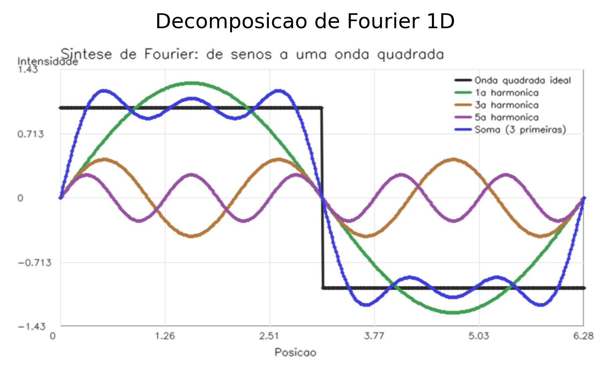
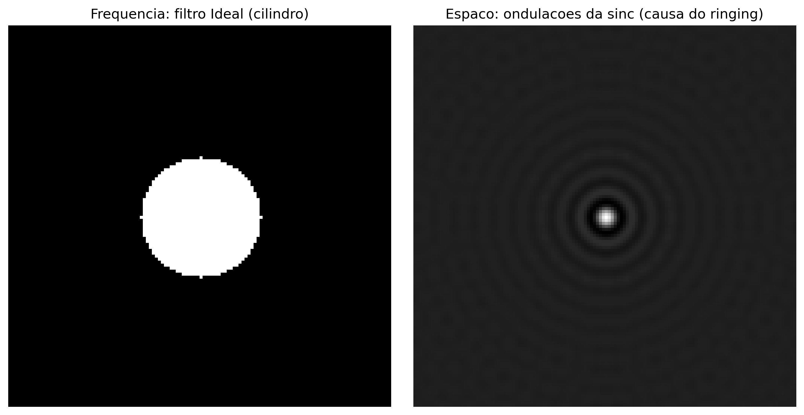
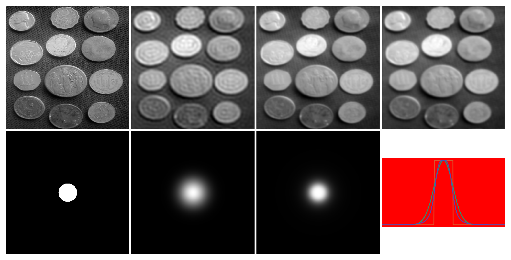
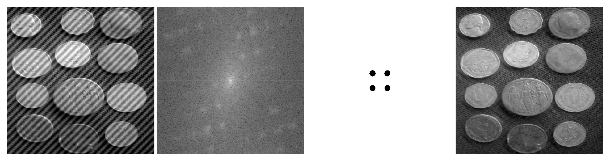
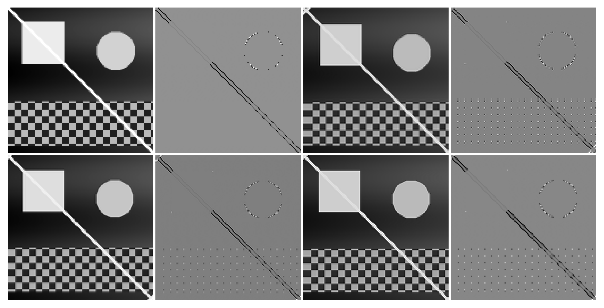
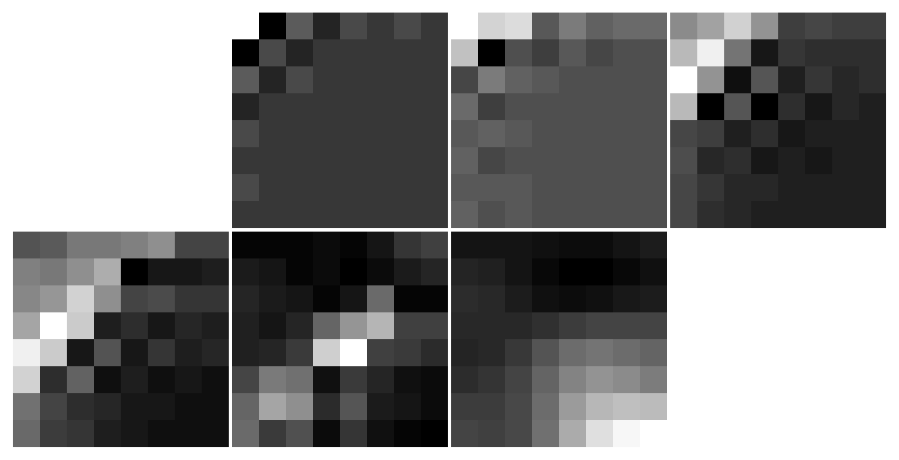
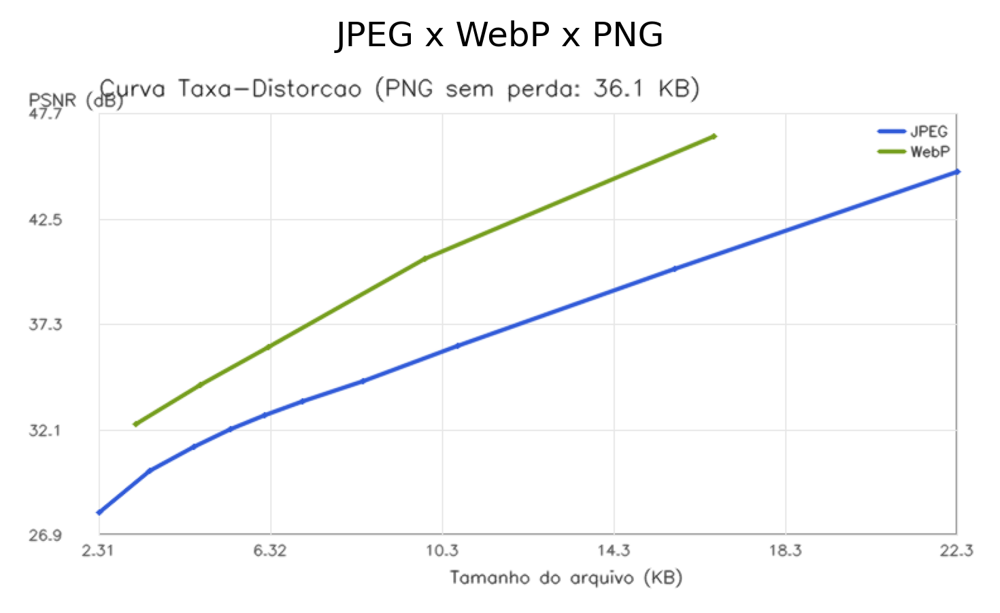
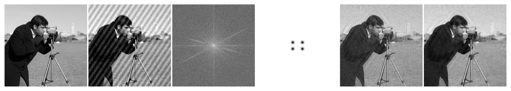

In the previous chapters, all operations were performed in the spatial domain, where algorithms act directly on pixel intensity values.
This chapter presents a complementary approach: the frequency domain, in which the image is represented by the spatial variations of intensity, rather than only by the individual pixel values.
The concept of spatial frequency describes how quickly intensity varies across the image. Slow variations correspond to low frequencies, while edges, fine details, and noise correspond to high frequencies.
This representation relies on the fact that any discrete digital image can be decomposed into a combination of orthogonal functions. The Fourier Transform uses a basis of two-dimensional complex exponentials (equivalent to sinusoids with specific orientation and frequency). Other transforms, such as the Cosine Transform (DCT) and the Wavelet Transform (DWT), use different families of basis functions — two-dimensional cosines in the case of the DCT, and functions with compact support in the case of wavelets.
Among the main applications of this representation are:
Frequency-domain filtering, to attenuate or enhance certain frequency bands;
Multiresolution analysis through wavelet transforms, which represents structures at different scales;
Image compression, by reducing the number of coefficients needed to represent the image.
5.1 Objectives
By the end of this chapter, you will be able to:
Interpret the Fourier spectrum of an image, distinguishing magnitude, phase, and frequency components;
Apply the Convolution Theorem to perform frequency-domain filtering using the Fast Fourier Transform (FFT);
Design and analyze frequency-domain filters, understanding the operation of low-pass, high-pass, and notch filters;
Understand multiresolution analysis via wavelet transforms and its application to the hierarchical representation of images;
Describe the image compression process, including the Discrete Cosine Transform (DCT) and coefficient quantization;
Select image storage formats, such as JPEG, PNG, and WebP, according to application requirements.
5.2 Environment Setup
import os, urllib.requestos.makedirs("tmp/state", exist_ok=True) # C++ track build artifactsurl ="https://raw.githubusercontent.com/fzampirolli/pdi-vc/master/morph/config.py"ifnot os.path.exists("config.py"): urllib.request.urlretrieve(url, "config.py")# Python kernel even on the C++ track. cpp=True downloads morph.hpp + stb; the# %%writefile *.cpp cells in this chapter compile WITH OpenCV# (-DMM_USE_OPENCV + pkg-config opencv4).import configconfig.setup(cpp=True)from morph import mmimport numpy as np
✅ Environment ready. Morph: 1.1.9 | OpenCV: 5.0.0
5.3 2D Discrete Fourier Transform
Fourier analysis is based on the principle that any periodic signal can be represented as a sum of sinusoidal functions with different frequencies, amplitudes, and phases. This concept also applies to digital images, allowing them to be represented in the frequency domain instead of the spatial domain.
Figure 5.1 illustrates this decomposition for a one-dimensional signal. In the case of an image, the Discrete Fourier Transform (DFT) converts the intensity matrix \(f(x,y)\) into a set of coefficients that describes the contribution of the different spatial frequencies present in the image.
%%writefile tmp/fig_decomposicao_1d.cpp#define MM_OUT "tmp/fig_decomposicao_1d.png"//| label: fig-decomposicao-1d//| fig-cap: "Fourier 1D decomposition: a square wave (dashed line) is approximated by the sum of the first sinusoids (colored lines). The more terms, the better the approximation."//| echo: false//| output: true#include <opencv2/opencv.hpp>#include <vector>#include <string>#include <cmath>#include "morph.hpp"#include <filesystem>int main() {// x = np.linspace(0, 2* np.pi, 400) std::vector<double> x(400);for (int i =0; i <400;++i) { x[i] = (2.0* M_PI) * i /399.0; }// square = np.where(x < np.pi, 1.0, -1.0) std::vector<double> square(400);for (int i =0; i <400;++i) { square[i] = (x[i] < M_PI) ? 1.0 : -1.0; }// soma = np.zeros_like(x) std::vector<double> soma(400, 0.0);// harms = [] std::vector<std::vector<double>> harms;//for n inrange(1, 4):for (int n =1; n <=3;++n) {// h = (4.0/ np.pi) * (1.0/ (2* n -1)) * np.sin((2* n -1) * x) std::vector<double> h(400);for (int i =0; i <400;++i) { h[i] = (4.0/ M_PI) * (1.0/ (2.0* n -1.0)) * std::sin((2.0* n -1.0) * x[i]); } harms.push_back(h);// soma = soma + hfor (int i =0; i <400;++i) { soma[i] += h[i]; } }// ys = [square, harms[0], harms[1], harms[2], soma] std::vector<std::vector<double>> ys = {square, harms[0], harms[1], harms[2], soma};// labels = [...] std::vector<std::string> labels = {"Ideal square wave", "1st harmonic", "3rd harmonic", "5th harmonic", "Sum (first 3)"};// colors = [(40, 40, 40), (60, 160, 80), (180, 120, 60), (150, 80, 160), (60, 60, 220)] std::vector<cv::Scalar> colors = { cv::Scalar(40, 40, 40), cv::Scalar(60, 160, 80), cv::Scalar(180, 120, 60), cv::Scalar(150, 80, 160), cv::Scalar(60, 60, 220) };// chart = mm.lineChart(...) mm::Image chart = mm::lineChart( x, ys, labels, colors,"Fourier synthesis: from sines to a square wave","Position", "Intensity" );// mm.show([chart], titles=["Decomposicao de Fourier 1D"], cols=1) std::vector<mm::Image> images = {chart}; std::vector<std::string> titles = {"Fourier 1D decomposition"}; mm::show(images, MM_OUT, titles, 1);// [pdi:panel-io] auto-generated — do not edit by handstd::filesystem::create_directories("tmp");mm::write(chart, "tmp/fig_decomposicao_1d_0.png");// [pdi:panel-io:end]return0;}
try: mm.show( [ mm.read("tmp/fig_decomposicao_1d_0.png"), ], titles=['Decomposicao de Fourier 1D', ], cols=1, )exceptExceptionas _e:print("figura indisponivel nesta trilha (C++): "+repr(_e) +" tmp/fig_decomposicao_1d_0.png (ver a versao Python)")

Figure 5.1: Decomposição de Fourier 1D: uma onda quadrada (linha tracejada) é aproximada pela soma das primeiras senoides (linhas coloridas). Quanto mais termos, melhor a aproximação.
5.3.1 Simulator: Reconstructing Signals with Sinusoids
Before studying two-dimensional images, the simulator in Figure 5.2 illustrates the principle of Fourier analysis for one-dimensional signals: a waveform can be approximated by the sum of sinusoids with different frequencies and amplitudes.
As new terms are added, the sum of the sinusoids (black curve) approaches the reference waveform (dashed). The lower plot displays the amplitude spectrum, indicating the contribution of each frequency to the reconstruction of the signal.
TipActivity
Explore the simulator and answer:
How many terms are needed to obtain a good approximation of the square wave?
Which of the three waveforms converges most rapidly? Justify your answer.
How does the amplitude spectrum change when switching from the square wave to the triangular wave?
NoteAnswers
1. How many terms are needed for a good approximation of the square wave?
With approximately 15 to 20 terms, the waveform already closely approximates the reference. However, near the discontinuities, a small oscillation remains, known as the Gibbs phenomenon, which does not disappear even with the addition of more terms.
2. Which waveform converges most rapidly? Why?
The triangular wave converges most rapidly, because the amplitudes of its harmonics decay faster than those of the square wave and the sawtooth wave. As a result, few terms already produce a good approximation.
3. How does the spectrum change between the square wave and the triangular wave?
Both contain only odd harmonics, but in the triangular wave, the amplitudes decrease much more rapidly. Thus, few harmonics are sufficient to reconstruct the signal with good accuracy.
∿ Simulator: 1D Fourier Decompositionsum of sinusoids
Terms
1
RMS Error
–
Target Waveform
square
Target Waveform
Number of Terms
1
Display
Figure 5.2: Interactive simulator of 1D Fourier decomposition: visualization of the sum of sinusoids with different frequencies, amplitudes and phases. Add terms and observe convergence to arbitrary waveforms.
5.3.2 Interpretation of the Frequency Spectrum
When applying the Discrete Fourier Transform (DFT) to an image and visualizing the magnitude of its coefficients (see Figure 5.5), one obtains the magnitude spectrum, which shows the distribution of spatial frequencies present in the image.
The coefficient located at the origin of the DFT, known as the DC component (Direct Current), corresponds to the zero frequency and represents the average intensity of the image. By convention, this coefficient is stored in the upper left corner of the spectrum. To facilitate its interpretation, the FFT Shift operation is applied, which shifts the DC component to the center of the image. After this shift, low frequencies are concentrated in the central region, while high frequencies are near the edges, as summarized in Table 5.1.
Table 5.1: Correspondence between the regions of the magnitude spectrum after applying the FFT Shift.
Spectrum region
Predominant components
Examples in the image
Center (low frequencies)
Slow spatial variations
Illumination, homogeneous regions, and global shapes
Intermediate region (mid frequencies)
Intermediate-scale variations
Textures and repetitive patterns
Edges (high frequencies)
Rapid spatial variations
Contours, fine details, and noise
This organization facilitates the interpretation of the spectrum and the design of filters. Attenuating low frequencies reduces global intensity variations, while attenuating high frequencies smooths the image by reducing fine details and part of the noise.
5.3.3 The Grid Experiment: Building an Image from a Single Coefficient
Before presenting the mathematical formulation of the Discrete Fourier Transform (DFT), it is useful to analyze its inverse, called the Inverse Discrete Fourier Transform (IDFT). Consider a spectrum in which all coefficients are zero, except one. An example of this construction is presented in the code of Figure 5.3 and can be explored interactively in the simulator of Figure 5.4.
The reconstructed image is a two-dimensional sinusoid. The position of the coefficient in the spectrum determines its orientation and its spatial frequency, while its magnitude and phase define, respectively, its amplitude and spatial displacement. Thus, each DFT coefficient represents a sinusoidal component, and the original image can be reconstructed by summing all these components.
[1] Espectro (1 ponto ativo)
[2] Onda 2D Resultante (IDFT)
try: mm.show( [ mm.read("tmp/fig_05_grade_2d_0.png"), mm.read("tmp/fig_05_grade_2d_1.png"), ], titles=['Espectro (1 ponto ativo)','Onda 2D Resultante (IDFT)', ], cols=2, figsize=(10, 4), )exceptExceptionas _e:print("figura indisponivel nesta trilha (C++): "+repr(_e) +" tmp/fig_05_grade_2d_0.png (ver a versao Python)")
Figure 5.3: Toda frequência no espectro (ponto isolado) corresponde a uma onda senoidal 2D rotacionada no domínio espacial.
∿ Simulator: 2D Frequency Synthesis (IDFT)Fourier Space
Frequency u
10
Frequency v
5
Distance R
11.18
Angle θ
26.6°
Spectrum (Click to move the point)
➔
Resulting 2D Wave (Spatial Domain)
10
5
Figure 5.4: Interactive simulator of 2D Fourier synthesis. Change the horizontal (\(u\)) and vertical (\(v\)) position of the coefficient in the centered frequency spectrum and observe how the distance from the center dictates the spatial frequency (thickness) and the angle dictates the orientation of the generated sine wave.
5.3.4 Mathematical Definition
Consider an image \(f(x,y)\) with dimensions \(M \times N\). Its 2D Discrete Fourier Transform (DFT) is defined by:
where \(u = 0, 1, \ldots, M-1\) and \(v = 0, 1, \ldots, N-1\) represent the discrete frequencies in the horizontal and vertical directions, respectively. The exponential term corresponds to a two-dimensional sinusoid, whose frequency and orientation are determined by the indices \((u,v)\).
The 2D Inverse Discrete Fourier Transform (IDFT) reconstructs the original image from its coefficients:
Equations Equation 5.1 and Equation 5.2 show that the DFT and the IDFT form a pair of transformations: the former converts the image into the frequency domain, while the latter exactly reconstructs the original image from its coefficients.
NoteOn the symbol \(j\)
The term \(j\) denotes the imaginary unit, defined by \(j^2 = -1\). In engineering and signal processing, \(j\) is adopted instead of \(i\) to avoid conflict with the notation for electric current. Its use in the complex exponential, governed by Euler’s formula (\(e^{j\theta} = \cos\theta + j\sin\theta\)), allows for a compact representation of the amplitude and phase of each spatial frequency present in the image.
NoteWhat is the DC component?
The coefficient \(F(0,0)\), termed the DC component (Direct Current), equals the sum of the intensities of all pixels in the image (see Figure 5.5):
\[
F(0,0)=MN\,\bar{f},
\]
where \(\bar{f}\) is the average intensity of the image. Therefore, the DC component represents the mean intensity level and, in most natural images, holds the largest magnitude of the spectrum.
The remaining coefficients represent variations around this mean. After applying the FFT Shift, the DC component is moved to the center of the spectrum, concentrating low frequencies in the central region and high frequencies at the edges.
Anatomy of the 2D Fourier Spectrum (after fftshift)
Figure 5.5: Conceptual diagram of the centered 2D Fourier spectrum.
5.3.5 Magnitude and Phase
Each coefficient of the Discrete Fourier Transform (DFT) is a complex number and can be written as
\[
F(u,v)=R(u,v)+j\,I(u,v),
\]
where \(R(u,v)\) and \(I(u,v)\) correspond, respectively, to the real and imaginary parts of the coefficient. From Equation Equation 5.1, we obtain
Thus, each coefficient can also be written in its polar form,
\[
F(u,v)=|F(u,v)|\,e^{j\phi(u,v)}.
\]
The Fourier spectrum can, therefore, be visualized by means of two distinct images: the magnitude spectrum, typically used to analyze the distribution of frequencies, and the phase spectrum, which describes the spatial organization of the sinusoidal components.
Although the magnitude spectrum is the most used for visual inspection, the phase contains a large portion of the structural information of the image. The combination of magnitude and phase allows the exact reconstruction of the original image via the IDFT.
5.3.6 What Do Magnitude and Phase Carry?
A classic demonstration consists of combining the magnitude of one image with the phase of another and reconstructing the result. This experiment highlights that:
Phase preserves the spatial structure of the image, including the position of objects, their contours, and their geometry. Small changes in phase can lead to major visual differences.
Magnitude controls how energy is distributed among spatial frequencies, primarily influencing contrast and texture.
When an image is reconstructed with the magnitude of A and the phase of B, the result tends to resemble B more than A, showing that phase is the main component responsible for the spatial organization of the scene. However, magnitude remains important, as it modulates the contrast of the reconstructed structures. Thus, a faithful reconstruction depends on the consistent combination of magnitude and phase.
An example of this behavior is presented in Figure 5.6.
NoteAnalogy with Audio: Limitations and Caveats
The phase of a signal plays distinct roles in audio and images:
Stereo or multichannel audio: the relative phase between channels is fundamental for perceiving the position of sound sources, through interaural time differences (ITD).
Monaural audio: absolute phase has little direct perceptual influence.
Images (DFT): phase is the main factor responsible for the spatial organization of the scene, while magnitude modulates contrast and the distribution of energy across frequencies.
In both domains, magnitude is related to the intensity of frequency components: in audio, it influences timbre and perceived loudness; in images, it influences contrast and texture.
%%writefile tmp/fig_05_dft_intro.cpp#define MM_OUT "tmp/fig_05_dft_intro.png"//| label: fig-05-dft-intro//| fig-cap: "Phase swap experiment: Image A (coins) and Image B (geometric pattern) reconstructed with swapped magnitudes and phases. The result shows that the visual structure is **much more sensitive to phase** than to magnitude: when B's phase is kept, the resulting image preserves B's spatial organization, even with A's magnitude. Magnitude, in turn, mainly influences contrast and texture. Note that the reconstruction quality is not perfect — there are visible artifacts —, evidencing the interdependence between phase and magnitude for a faithful image representation."//| echo: true//| output: true#include <opencv2/opencv.hpp>#include <filesystem>#include <iostream>#include <vector>#include <string>#include <cmath>#include <complex>#include "morph.hpp"// Helper: manual fftshift (swap quadrants)void fftshift(cv::Mat& mat) {int cx = mat.cols /2;int cy = mat.rows /2; cv::Mat q0(mat, cv::Rect(0, 0, cx, cy));// Top-Left cv::Mat q1(mat, cv::Rect(cx, 0, cx, cy));// Top-Right cv::Mat q2(mat, cv::Rect(0, cy, cx, cy));// Bottom-Left cv::Mat q3(mat, cv::Rect(cx, cy, cx, cy));// Bottom-Right cv::Mat tmp; q0.copyTo(tmp); q3.copyTo(q0); tmp.copyTo(q3); q1.copyTo(tmp); q2.copyTo(q1); tmp.copyTo(q2);}// Helper: ifftshift (inverse of fftshift)void ifftshift(cv::Mat& mat) { fftshift(mat);// same operation for even sizes}int main() {// ── Experiment: The Importance of Phase ──────────────────────────────────// ── Image loading ──────────────────────────────────────────────────────── std::string url ="https://upload.wikimedia.org/wikipedia/commons/2/25/GAZI.MD.AHAD_11.jpg"; std::string caminho ="imagens/coins.jpg"; cv::Mat img_obj;if (!std::filesystem::exists(caminho)) { std::filesystem::create_directories("imagens"); img_obj = mm::read(url); mm::write(img_obj, caminho); } else { img_obj = mm::read(caminho); }// Convert to grayscale cv::Mat img_gray_mat = mm::gray(img_obj); mm::Image img_gray = img_gray_mat;// Resize to 400x400 cv::Mat img_a_mat; cv::resize(img_gray_mat, img_a_mat, cv::Size(400, 400)); mm::Image img_a = img_a_mat;// Create synthetic image B (geometric pattern) cv::Mat img_b_mat = cv::Mat::zeros(400, 400, CV_8UC1); cv::rectangle(img_b_mat, cv::Point(100, 100), cv::Point(300, 300), 255, -1); cv::circle(img_b_mat, cv::Point(200, 200), 150, 128, 10); mm::Image img_b = img_b_mat;// Compute FFTs cv::Mat img_a_32f, img_b_32f; img_a_mat.convertTo(img_a_32f, CV_32F); img_b_mat.convertTo(img_b_32f, CV_32F); cv::Mat FA_complex, FB_complex; cv::dft(img_a_32f, FA_complex, cv::DFT_COMPLEX_OUTPUT); cv::dft(img_b_32f, FB_complex, cv::DFT_COMPLEX_OUTPUT);// Split into channels for magnitude/phase manipulation std::vector<cv::Mat> FA_channels(2), FB_channels(2); cv::split(FA_complex, FA_channels); cv::split(FB_complex, FB_channels);// Compute magnitude and phase cv::Mat FA_mag, FA_phase, FB_mag, FB_phase; cv::magnitude(FA_channels[0], FA_channels[1], FA_mag); cv::phase(FA_channels[0], FA_channels[1], FA_phase); cv::magnitude(FB_channels[0], FB_channels[1], FB_mag); cv::phase(FB_channels[0], FB_channels[1], FB_phase);// Reconstruct with swapped magnitudes and phases cv::Mat rec_A_mag_B_fase_complex_real, rec_A_mag_B_fase_complex_imag; cv::Mat rec_B_mag_A_fase_complex_real, rec_B_mag_A_fase_complex_imag;// rec_A_mag_B_fase =|FA|* exp(i * angle(FB)) cv::Mat real_A = FA_mag.mul(cv::Mat(FA_phase.size(), CV_32F, cv::Scalar(0))); cv::Mat real_B = FB_mag.mul(cv::Mat(FB_phase.size(), CV_32F, cv::Scalar(0)));// For complex multiplication: (r1*c1 - i1*s1, r1*s1 + i1*c1) cv::Mat r1 = FA_mag, i1 = cv::Mat::zeros(FA_mag.size(), CV_32F); cv::Mat c1, s1; cv::phase(FB_channels[0], FB_channels[1], FB_phase, true); cv::Mat ones = cv::Mat::ones(FB_phase.size(), CV_32F); cv::Mat cos_phase, sin_phase; cv::Mat fb_phase_deg = FB_phase * (CV_PI /180.0); cv::Mat fa_phase_deg = FA_phase * (CV_PI /180.0); cv::polarToCart(ones, fb_phase_deg, c1, s1);// Complex multiply: (r1 + j*i1) * (c1 + j*s1) = (r1*c1 - i1*s1) + j*(r1*s1 + i1*c1) cv::Mat resp_real = r1.mul(c1) - i1.mul(s1); cv::Mat resp_imag = r1.mul(s1) + i1.mul(c1);// For rec_B_mag_A_fase: |FB|* exp(i * angle(FA)) cv::Mat r2 = FB_mag, i2 = cv::Mat::zeros(FB_mag.size(), CV_32F); cv::Mat c2, s2; cv::polarToCart(cv::Mat::ones(fa_phase_deg.size(), CV_32F), fa_phase_deg, c2, s2); cv::Mat resp2_real = r2.mul(c2) - i2.mul(s2); cv::Mat resp2_imag = r2.mul(s2) + i2.mul(c2);// Combine real and imaginary into complex matrices cv::Mat rec_A_mag_B_fase_complex, rec_B_mag_A_fase_complex; std::vector<cv::Mat> rec_A_channels = {resp_real, resp_imag}; std::vector<cv::Mat> rec_B_channels = {resp2_real, resp2_imag}; cv::merge(rec_A_channels, rec_A_mag_B_fase_complex); cv::merge(rec_B_channels, rec_B_mag_A_fase_complex);// Inverse FFT cv::Mat rec_A_mag_B_fase_float, rec_B_mag_A_fase_float; cv::idft(rec_A_mag_B_fase_complex, rec_A_mag_B_fase_float, cv::DFT_SCALE | cv::DFT_REAL_OUTPUT); cv::idft(rec_B_mag_A_fase_complex, rec_B_mag_A_fase_float, cv::DFT_SCALE | cv::DFT_REAL_OUTPUT);// Convert to 8-bit cv::Mat rec_A_mag_B_fase_mat, rec_B_mag_A_fase_mat; rec_A_mag_B_fase_float.convertTo(rec_A_mag_B_fase_mat, CV_8U); rec_B_mag_A_fase_float.convertTo(rec_B_mag_A_fase_mat, CV_8U); mm::Image rec_A_mag_B_fase = rec_A_mag_B_fase_mat; mm::Image rec_B_mag_A_fase = rec_B_mag_A_fase_mat;// Display results mm::show( {img_a, img_b, rec_A_mag_B_fase, rec_B_mag_A_fase}, MM_OUT, {"Imagem A", "Imagem B", "Mag(A) + Fase(B)", "Mag(B) + Fase(A)"},4 ); std::cout <<"💡 A fase preserva bordas e contornos; a magnitude controla contraste e"<< std::endl; std::cout <<"textura. Em áudio estéreo, a fase afeta a localização espacial; em"<< std::endl; std::cout <<"imagens, determina a organização da cena."<< std::endl;// [pdi:state-io] auto-generated — do not edit by handstd::filesystem::create_directories("tmp/state");mm::write(img_gray, "tmp/state/img_gray_20.png");// [pdi:state-io:end]// [pdi:panel-io] auto-generated — do not edit by handstd::filesystem::create_directories("tmp");mm::write(img_a, "tmp/fig_05_dft_intro_0.png");mm::write(img_b, "tmp/fig_05_dft_intro_1.png");mm::write(rec_A_mag_B_fase, "tmp/fig_05_dft_intro_2.png");mm::write(rec_B_mag_A_fase, "tmp/fig_05_dft_intro_3.png");// [pdi:panel-io:end]return0;}
[1] Imagem A
[2] Imagem B
[3] Mag(A) + Fase(B)
[4] Mag(B) + Fase(A)
💡 A fase preserva bordas e contornos; a magnitude controla contraste e
textura. Em áudio estéreo, a fase afeta a localização espacial; em
imagens, determina a organização da cena.
Figure 5.6: Experimento de troca de fase: Imagem A (moedas) e Imagem B (padrão geométrico) reconstruídas com magnitudes e fases trocadas. O resultado mostra que a estrutura visual é muito mais sensível à fase do que à magnitude: quando a fase de B é mantida, a imagem resultante preserva a organização espacial de B, mesmo com a magnitude de A. A magnitude, por sua vez, influencia principalmente o contraste e a textura. Observe que a qualidade da reconstrução não é perfeita — há artefatos visíveis —, evidenciando a interdependência entre fase e magnitude para uma representação fiel da imagem.
5.4 Convolution Theorem and Filtering Strategies
The Convolution Theorem establishes a fundamental relationship between the spatial and frequency domains:
where \(\circledast\) denotes discrete circular convolution. Thus, the convolution between an image \(f(x,y)\) and a filter \(h(x,y)\) can be replaced by the multiplication of their spectra.
In practice, to obtain the same result as the linear convolution performed in the spatial domain, zero-padding is applied before the Fast Fourier Transform (FFT), avoiding artifacts at the image borders.
However, frequency-domain filtering is not always the most efficient alternative. For filters such as the Gaussian and the Box Filter, the separability property allows a significant reduction in the computational cost of convolution in the spatial domain.
5.4.1 Separable vs. Non-Separable Kernel
A separable kernel can be written as the outer product of two one-dimensional vectors,
\[
H = v\,h^T,
\]
allowing the two-dimensional convolution to be replaced by two consecutive one-dimensional convolutions: one in the horizontal direction and another in the vertical direction.
In contrast, a non-separable kernel does not admit such a decomposition, and therefore its convolution must be performed directly over the two-dimensional neighborhood.
In practice, for a kernel of dimension \(K \times K\), direct convolution requires \(K^2\) multiplications per pixel, whereas a separable kernel requires only \(2K\) multiplications, significantly reducing the computational cost.
5.4.2 Computational Efficiency Analysis
Consider an image of dimensions \(M \times N\) and a square filter of size \(K \times K\). Table 5.2 compares the complexity of the main filtering strategies.
Table 5.2: Comparison of the complexity of direct convolution, separable convolution, and filtering via the Fast Fourier Transform (FFT).
Filtering Method
Asymptotic Complexity
Dependence on \(K\)
Typical Application
Non-separable spatial
\(\mathcal{O}(MNK^2)\)
Quadratic
Small, non-separable kernels
Separable spatial
\(\mathcal{O}(MNK)\)
Linear
Gaussian and mean filters
Via FFT
\(\mathcal{O}(MN\log(MN))\)
Independent of \(K\)
Large kernels
For small kernels, spatial convolution, especially when the filter is separable, tends to be more efficient due to the low cost of operations. As the kernel size increases, FFT-based filtering becomes more advantageous, since its cost is practically independent of the filter dimension.
5.4.3 Discussion of experimental results
The graph obtained in the test with the coin image (\(2560 \times 1920\)), presented in Figure 5.7, confirms the behavior predicted by the computational complexity analysis.
Non-separable convolution (\(\mathcal{O}(MNK^2)\))
Direct convolution exhibits quadratic growth with kernel size. For small values of \(K\), the cost is low, but it increases rapidly as the kernel grows, becoming unfeasible for real-time applications.
FFT-based filtering (\(\mathcal{O}(MN \log(MN))\))
The cost of the FFT depends only on the image size, being independent of \(K\). Therefore, its performance remains approximately constant as the kernel varies, making it advantageous for large or non-separable filters.
Separable convolution (\(\mathcal{O}(MNK)\))
Decomposing the kernel into two one-dimensional filters significantly reduces the computational cost. In practice, this approach tends to be the most efficient for separable filters, especially in optimized implementations.
In general, the choice of method depends on the size and structure of the kernel. Separable filters are more efficient in the spatial domain, while the FFT becomes more advantageous for large kernels or multiple convolutions in the frequency domain.
\[
g = \mathcal{F}^{-1}\bigl[\mathcal{F}(f)\cdot \mathcal{F}(h)\bigr]
\quad \text{(FFT)}
\qquad
g = f \circledast h
\quad \text{(direct convolution)}
\qquad
g = (f \circledast v) \circledast h^T
\quad \text{(separable)}
\tag{5.4}\]
where:
\(f(x,y)\) represents the input image;
\(h(x,y)\) is the two-dimensional filter kernel;
\(v\) and \(h^T\) are, respectively, the vertical and horizontal vectors that compose the separable kernel.
Figure 5.7: Efficiency comparison: Non-separable Convolution (Spatial 2D), Separable (Spatial 1D), and via FFT.
ImportantThe Problem of Circular Convolution (Wrap-Around)
The Discrete Fourier Transform (DFT) assumes that the image is periodically extended in space, meaning that its borders repeat indefinitely.
Under this condition, multiplication in the frequency domain corresponds to a circular convolution in the spatial domain. Consequently, opposite regions of the image (top and bottom, left and right) begin to interact artificially, as illustrated in Figure 5.8.
Applying zero-padding before the FFT reduces this effect by extending the image with null values at the borders, approximating the result of linear convolution. This behavior can be interpreted in light of the Convolution Theorem, presented in Figure 5.9.
%%writefile tmp/fig_05_padding_error.cpp#define MM_OUT "tmp/fig_05_padding_error.png"#include <opencv2/opencv.hpp>#include <vector>#include <string>#include "morph.hpp"#include <filesystem>int main() {// [pdi:state-io] auto-generated — do not edit by handmm::Image img_gray = mm::_read_state("tmp/state/img_gray_20.png");// [pdi:state-io:end]//| label: fig-05-padding-error//| fig-cap: "Without *padding*, a severe shift causes the image to leak to the opposite side (circular convolution)."//| echo: true//| output: true// ── Define M and N ─────────────────────────────────────────────────────────────int M = img_gray.h;int N = img_gray.w;// Convert to CV_64F forcomplex operations cv::Mat img_gray_cv; cv::Mat img_gray_disp = cv::Mat(img_gray.h, img_gray.w, CV_8UC1, img_gray.data.data()); img_gray_disp.convertTo(img_gray_cv, CV_64F);// Simulation of a brutal shift filter cv::Mat H_shift(M, N, CV_64FC2, cv::Scalar(0, 0));for (int u =0; u < M; u++) {for (int v =0; v < N; v++) { double angle =-2.0* CV_PI * (u *120.0/ M + v *120.0/ N); H_shift.at<cv::Vec2d>(u, v)[0] = cos(angle);// Real part H_shift.at<cv::Vec2d>(u, v)[1] = sin(angle);// Imaginary part } }// Filtering WITHOUT padding (causes wrap-around) cv::Mat img_gray_32f; img_gray_disp.convertTo(img_gray_32f, CV_32F); cv::Mat F_img, F_padded;// Compute FFT of the image cv::Mat planes[] = {img_gray_32f, cv::Mat::zeros(img_gray_32f.size(), CV_32F)}; cv::Mat img_complex; cv::merge(planes, 2, img_complex); cv::dft(img_complex, F_img, cv::DFT_COMPLEX_OUTPUT);// Perform pointwise multiplication in frequency domain cv::Mat H_shift_32f, F_img_shifted; H_shift.convertTo(H_shift_32f, CV_32FC2); cv::mulSpectrums(F_img, H_shift_32f, F_img_shifted, 0);// Inverse FFT to get the filtered image cv::Mat img_vazada; cv::idft(F_img_shifted, img_vazada, cv::DFT_SCALE | cv::DFT_REAL_OUTPUT);// Collect real part (already done by DFT_REAL_OUTPUT) cv::Mat img_vazada_vis; cv::normalize(img_vazada, img_vazada_vis, 0, 255, cv::NORM_MINMAX, CV_8U);// Display results cv::Mat display_original = cv::Mat(img_gray.h, img_gray.w, CV_8UC1, img_gray.data.data()); std::vector<mm::Image> images; images.push_back(mm::Image(display_original)); images.push_back(mm::Image(img_vazada_vis)); std::vector<std::string> titles; titles.push_back("Original"); titles.push_back("Filtering w/o Padding (Leakage)"); mm::show(images, MM_OUT, titles, 2);// [pdi:panel-io] auto-generated — do not edit by handstd::filesystem::create_directories("tmp");mm::write(img_gray, "tmp/fig_05_padding_error_0.png");mm::write(img_vazada_vis, "tmp/fig_05_padding_error_1.png");// [pdi:panel-io:end]return0;}
Figure 5.8: Sem padding, um deslocamento severo faz a imagem vazar para o lado oposto (convolução circular).
%%writefile tmp/fig_05_conv_teorema.cpp#define MM_OUT "tmp/fig_05_conv_teorema.png"//| label: fig-05-conv-teorema//| fig-cap: "Teorema da Convolução: filtrar no domínio do espaço (Gaussiana) equivale a multiplicar o espectro por $H(u,v)$ na frequência. As saídas coincidem visualmente."//| echo: true//| output: true// Same smoothing through two paths: space vs. frequency.#include <opencv2/opencv.hpp>#include <vector>#include <string>#include "morph.hpp"#include <filesystem>int main() {// [pdi:state-io] auto-generated — do not edit by handmm::Image img_gray = mm::_read_state("tmp/state/img_gray_20.png");// [pdi:state-io:end]// img_gray is injected here (mm::Image)int M = img_gray.h;// heightint N = img_gray.w;// width cv::Mat H = mm::gaussFilter(M, N, 30);// H(u,v): gaussian low-pass transfer function mm::Image f_freq = mm::freqFilter(img_gray, H);// convolution via frequency-domain multiplication// Same smoothing done in the spatial domain: Gaussian blur with kernel 31x31, sigma=5 cv::Mat img_mat = img_gray;// convert mm::Image to cv::Mat cv::Mat blurred; cv::GaussianBlur(img_mat, blurred, cv::Size(31, 31), 5); mm::Image f_esp(blurred); mm::show( std::vector<mm::Image>{img_gray, f_esp, f_freq}, MM_OUT, std::vector<std::string>{"Original", "Espaco: Gaussiana", "Frequencia: H(u,v).F(u,v)"},3 );// [pdi:panel-io] auto-generated — do not edit by handstd::filesystem::create_directories("tmp");mm::write(img_gray, "tmp/fig_05_conv_teorema_0.png");mm::write(f_esp, "tmp/fig_05_conv_teorema_1.png");mm::write(f_freq, "tmp/fig_05_conv_teorema_2.png");// [pdi:panel-io:end]return0;}
Figure 5.9: Teorema da Convolução: filtrar no domínio do espaço (Gaussiana) equivale a multiplicar o espectro por \(H(u,v)\) na frequência. As saídas coincidem visualmente.
NoteOn Numerical Difference
The residual difference on the order of \(10^{-13}\) does not violate the Convolution Theorem, but rather reflects computational limitations inherent to floating-point arithmetic (double precision, ~\(10^{-16}\)) and to the order of operations between the two methods:
Spatial convolution: weighted sum of neighbors with successive roundings.
Frequency convolution: involves three FFT transforms and one complex multiplication, subject to truncation and quantization errors.
Therefore, the theoretical equality is exact, but the numerical implementation produces a practically negligible difference (relative error < \(10^{-12}\)), confirming the theorem within machine precision.
5.5 Frequency Domain Filters
A frequency domain filter can be interpreted as a transfer function applied to the image spectrum. In this representation, each frequency coefficient is multiplied by a value between 0 and 1, which determines its attenuation or preservation. The shape of this function defines the visual effect of the filter.
Abrupt cutoff and ringing. Ideal filters with an instantaneous transition at a cutoff frequency \(D_0\) produce discontinuities in the frequency domain. This discontinuity is reflected in the spatial domain as oscillations near edges, known as ringing. This effect is associated with convolution with functions of infinite support in space, such as the sinc function, as illustrated in Figure 5.10.
Filters with smooth transition. Alternatives such as the Gaussian and Butterworth filters smooth the transition between pass and reject regions, reducing ringing. In contrast, this smoothing implies a less defined separation boundary between preserved and attenuated frequencies.
%%writefile tmp/fig_05_conv_teorema_zoom.cpp#define MM_OUT "tmp/fig_05_conv_teorema_zoom.png"//| label: fig-05-conv-teorema-zoom//| fig-cap: "A Dualidade Perigosa: o corte abrupto na Frequência (cilindro Ideal) vira obrigatoriamente uma *sinc* no espaço. Suas ondulações causam o *ringing* fantasma nas bordas da imagem."//| echo: true//| output: true#include <opencv2/opencv.hpp>#include <vector>#include <string>#include "morph.hpp"#include <filesystem>int main() {// Filtro Ideal na frequência (cilindro) e sua resposta espacial (sinc 2D).int N =128; cv::Mat H_freq = mm::idealFilter(N, N, 20);//1 dentro do raio 20, 0 fora mm::Image h_space = mm::spatialKernel(H_freq);// ifft2(H) -> ondulações da sinc (ringing) mm::show( std::vector<mm::Image>{H_freq, h_space}, MM_OUT, {"Frequencia: filtro Ideal (cilindro)","Espaco: ondulacoes da sinc (causa do ringing)", },2 );// [pdi:panel-io] auto-generated — do not edit by handstd::filesystem::create_directories("tmp");mm::write(H_freq, "tmp/fig_05_conv_teorema_zoom_0.png");mm::write(h_space, "tmp/fig_05_conv_teorema_zoom_1.png");// [pdi:panel-io:end]return0;}
[1] Frequencia: filtro Ideal (cilindro)
[2] Espaco: ondulacoes da sinc (causa do ringing)
try: mm.show( [ mm.read("tmp/fig_05_conv_teorema_zoom_0.png"), mm.read("tmp/fig_05_conv_teorema_zoom_1.png"), ], titles=['Frequencia: filtro Ideal (cilindro)','Espaco: ondulacoes da sinc (causa do ringing)', ], cols=2, )exceptExceptionas _e:print("figura indisponivel nesta trilha (C++): "+repr(_e) +" tmp/fig_05_conv_teorema_zoom_0.png (ver a versao Python)")

Figure 5.10: A Dualidade Perigosa: o corte abrupto na Frequência (cilindro Ideal) vira obrigatoriamente uma sinc no espaço. Suas ondulações causam o ringing fantasma nas bordas da imagem.
5.5.1 Low-Pass Filters
Low-pass filters attenuate high-frequency components, resulting in image smoothing and noise reduction. After spectrum centering (FFT Shift), the distance from each point to the center is given by:
The abrupt cutoff at \(D_0\) introduces discontinuities in the frequency domain, resulting in oscillations in the spatial domain known as ringing. This effect is associated with convolution with functions of infinite support.
The smoothness of the Gaussian function in the frequency domain avoids discontinuities, which eliminates ringing and produces a gradual transition between preserved and attenuated frequencies.
Butterworth Filter (LPFB) of order \(n\):\[
H_{\text{BW}}(u,v) = \frac{1}{1 + \left[D(u,v)/D_0\right]^{2n}}
\tag{5.8}\]
The parameter \(n\) controls the smoothness of the transition between frequency pass and rejection. Small values produce smooth transitions, while large values approximate the behavior of the ideal filter, with a higher risk of ringing. A comparative example is presented in Figure 5.11.
This type of filtering is useful when one wishes to simultaneously remove low- and high-frequency components, preserving only structures of intermediate scale.
An important application is the removal of periodic noise, in which regular patterns appear as localized peaks in the magnitude spectrum. These peaks can be attenuated by means of notch (band-reject) filters, positioned specifically at the undesired frequencies.
[1] Original
[2] LPF Ideal
[3] LPF Gaussiano
[4] LPF Butterworth (n=2)
[5] H Ideal
[6] H Gaussiano
[7] H Butterworth
[8] Perfis H(u,v)
try: mm.show(mm.read("tmp/fig_05_filtros_freq.png"), figsize=(16, 9))exceptExceptionas _e:print("figura indisponivel nesta trilha (C++): "+repr(_e) +" tmp/fig_05_filtros_freq.png (ver a versao Python)")

Figure 5.13: Comparação entre filtros passa-baixa: Ideal (D₀=30), Gaussiano (D₀=30) e Butterworth (D₀=30, n=2). Perfis de H(u,v) ao longo de uma linha central e imagens filtradas correspondentes.
%%writefile tmp/fig_05_filtros_passa_alta.cpp#define MM_OUT "tmp/fig_05_filtros_passa_alta.png"#include <opencv2/opencv.hpp>#include "morph.hpp"#include <vector>#include <string>#include <filesystem>int main() {// [pdi:state-io] auto-generated — do not edit by handmm::Image img_gray = mm::_read_state("tmp/state/img_gray_20.png");// [pdi:state-io:end]//| label: fig-05-filtros-passa-alta//| fig-cap: "High-pass Gaussian filter. (a) Original; (b) High-pass filter (D₀=30) - edges of coins and textured background are enhanced."// High-passfilter= complement of Gaussian low-pass (1- H_gauss),// built with mm.gaussFilter(..., highpass=True) and applied via FFT.int M = img_gray.h;int N = img_gray.w; double D0 =30; cv::Mat H_alta = mm::gaussFilter(M, N, D0, true); mm::Image img_alta = mm::freqFilter(img_gray, H_alta); mm::show( std::vector<mm::Image>{img_gray, img_alta}, MM_OUT, std::vector<std::string>{"Original", "High-pass Gaussian ($D_0=30$)"},2 );// [pdi:panel-io] auto-generated — do not edit by handstd::filesystem::create_directories("tmp");mm::write(img_gray, "tmp/fig_05_filtros_passa_alta_0.png");mm::write(img_alta, "tmp/fig_05_filtros_passa_alta_1.png");// [pdi:panel-io:end]return0;}
Figure 5.14: Filtro passa-alta Gaussiano. (a) Original; (b) Filtro passa-alta (D₀=30) - as bordas das moedas e fundo texturizado são realçados.
5.5.3 Periodic Noise Removal
Periodic noise — associated with electrical interference, regular sensor patterns, or scanning artifacts — appears in the Fourier spectrum as symmetrical point peaks around the center.
The notch filter selectively attenuates these frequencies while preserving the remaining image components. An application example is presented in Figure 5.15.
%%writefile tmp/fig_05_ruido_periodico.cpp#define MM_OUT "tmp/fig_05_ruido_periodico.png"//| label: fig-05-ruido-periodico//| fig-cap: "Remoção de ruído periódico via filtro *notch* no domínio da frequência: (a) imagem com ruído senoidal, (b) espectro mostrando os picos do ruído, (c) máscara *notch* centrada nos picos, (d) imagem restaurada."//| echo: true//| output: true#include <opencv2/opencv.hpp>#include <iostream>#include <vector>#include <string>#include <cmath>#include "morph.hpp"int main() {// [pdi:state-io] auto-generated — do not edit by handmm::Image img_gray = mm::_read_state("tmp/state/img_gray_20.png");// [pdi:state-io:end]// Ruído senoidal 2D-> espectro -> máscara notch nos 4 picos simétricos -> restauração.int h_img = img_gray.h;int w_img = img_gray.w;// Create X, Y meshgrid cv::Mat X(h_img, w_img, CV_64F); cv::Mat Y(h_img, w_img, CV_64F);for(int y =0; y < h_img; y++) {for(int x =0; x < w_img; x++) { X.at<double>(y, x) = x; Y.at<double>(y, x) = y; } }int u0 =20, v0 =20;// frequências exatas do ruído// Generate sinusoidal noise cv::Mat ruido(h_img, w_img, CV_64F); cv::Mat img_ruidosa_f(h_img, w_img, CV_64F);for(int y =0; y < h_img; y++) {for(int x =0; x < w_img; x++) { double val =40.0* std::sin(2.0* M_PI * (u0 * x / (double)w_img + v0 * y / (double)h_img)); ruido.at<double>(y, x) = val; double v = (double)img_gray.data[y * w_img + x] + val; img_ruidosa_f.at<double>(y, x) = std::min(255.0, std::max(0.0, v)); } } mm::Image img_ruidosa(img_ruidosa_f);// Espectro de magnitude (log) da imagem ruidosa mm::Image mag_vis = mm::spectrumMag(img_ruidosa);// Máscara notch: 1.0 em todo o plano, disco de 0.0 em cada um dos 4 picos cv::Mat mascara(h_img, w_img, CV_64F, cv::Scalar(1.0));int r_notch =8;int cy = h_img /2, cx = w_img /2;for(auto [dy, dx] : {std::make_pair(v0, u0), std::make_pair(-v0, -u0), std::make_pair(v0, -u0), std::make_pair(-v0, u0)}) {for(int y =0; y < h_img; y++) {for(int x =0; x < w_img; x++) { double dist = std::sqrt(std::pow(y - (cy + dy), 2) + std::pow(x - (cx + dx), 2));if(dist <= r_notch) { mascara.at<double>(y, x) =0.0; } } } } cv::Mat mascara_8u; mascara.convertTo(mascara_8u, CV_8U, 255.0); mm::Image mascara_vis(mascara_8u);// Filtragem: aplica a máscara centrada como filtro no domínio da frequência mm::Image img_rest_vis = mm::freqFilter(img_ruidosa, mascara);// Convert img_gray and img_rest_vis to cv::Mat for PSNR cv::Mat img_gray_cv = img_gray; cv::Mat img_rest_cv = img_rest_vis; double psnr = cv::PSNR(img_gray_cv, img_rest_cv); std::cout <<"PSNR (original vs restaurada): "<< psnr <<" dB"<< std::endl; std::vector<mm::Image> results = {img_ruidosa, mag_vis, mascara_vis, img_rest_vis}; std::vector<std::string> titles = {"Com ruído periódico","Espectro (log)","Máscara notch","Restaurada (PSNR="+ std::to_string(psnr).substr(0, 4) +" dB)" }; mm::show(results, MM_OUT, titles, 4);return0;}
PSNR (original vs restaurada): 33.0718 dB
[1] Com ruído periódico
[2] Espectro (log)
[3] Máscara notch
[4] Restaurada (PSNR=33.0 dB)
try: mm.show(mm.read("tmp/fig_05_ruido_periodico.png"), figsize=(16, 4))exceptExceptionas _e:print("figura indisponivel nesta trilha (C++): "+repr(_e) +" tmp/fig_05_ruido_periodico.png (ver a versao Python)")

Figure 5.15: Remoção de ruído periódico via filtro notch no domínio da frequência: (a) imagem com ruído senoidal, (b) espectro mostrando os picos do ruído, (c) máscara notch centrada nos picos, (d) imagem restaurada.
📌 Synthesis — Spectral Filters
Filter
Visual effect
Artifact
Use
Ideal low-pass
Intense smoothing
Ringing
Illustrative
Gaussian low-pass
Gentle smoothing
No ringing
General smoothing
Butterworth low-pass
Controlled smoothing
Ringing (high orders)
Trade-off between smoothing and selectivity
High-pass
Edge enhancement
Noise amplification
Contour detection
Notch
Selective frequency removal
Possible local distortions
Periodic noise removal
The design of filters in the frequency domain consists of defining spectral masks. However, effects in the spatial domain, such as ringing and blurring, emerge directly from these choices in the spectrum.
5.6Wavelets and Multiresolution
The Fourier Transform decomposes the signal into global frequencies: each coefficient \(F(u,v)\) receives contributions from the entire image, with no explicit information about the spatial localization of those frequencies. Thus, localized structures, such as edges, are represented in a distributed manner across the spectrum.
Wavelets (ondaletas) overcome this limitation by using basis functions localized in space, which can be translated and scaled. These functions have compact support, that is, they are nonzero only in a finite region of the domain, allowing a simultaneous representation in terms of frequency and spatial localization.
5.6.1 The Limit of the Fourier Transform: Spatial Localization
The Fourier Transform accurately describes which frequencies are present in a signal, but it does not explicitly represent where those frequencies occur in space.
In the experiment presented in Figure 5.16, two images with structures located at different positions produce nearly identical magnitude spectra. This occurs because the Fourier representation is global: each coefficient receives contributions from the entire image.
As a result, the magnitude spectrum does not explicitly represent the location of edges or other structures, only the distribution of the frequencies present. This limitation motivated the development of multiresolution representations, such as the Discrete Wavelet Transform (DWT), capable of simultaneously describing the frequency and spatial localization of image structures.
%%writefile tmp/fig_05_fracasso_fourier.cpp#define MM_OUT "tmp/fig_05_fracasso_fourier.png"//| label: fig-05-fracasso-fourier//| fig-cap: "Fourier global é cego para a posição. Os espectros não dizem onde as bordas estão."//| echo: true//| output: true#include <opencv2/opencv.hpp>#include <vector>#include <string>#include "morph.hpp"#include <filesystem>// Helper to shift the zero-frequency component to the center (fftshift for2D)void fftshift2D(cv::Mat& src, cv::Mat& dst) {int cx = src.cols /2;int cy = src.rows /2; cv::Mat q0(src, cv::Rect(0, 0, cx, cy));// Top-Left cv::Mat q1(src, cv::Rect(cx, 0, src.cols - cx, cy));// Top-Right cv::Mat q2(src, cv::Rect(0, cy, cx, src.rows - cy));// Bottom-Left cv::Mat q3(src, cv::Rect(cx, cy, src.cols - cx, src.rows - cy));// Bottom-Right cv::Mat tmp; q0.copyTo(tmp); q3.copyTo(q0); tmp.copyTo(q3); q1.copyTo(tmp); q2.copyTo(q1); tmp.copyTo(q2); dst = src.clone();}int main() {// Create signal images cv::Mat img_sinal1 = cv::Mat::zeros(128, 128, CV_64F); img_sinal1(cv::Rect(20, 0, 5, 128)).setTo(1.0);// Vertical bar at x=20:25 img_sinal1(cv::Rect(0, 100, 128, 5)).setTo(1.0);// Horizontal bar at y=100:105 cv::Mat img_sinal2 = cv::Mat::zeros(128, 128, CV_64F); img_sinal2(cv::Rect(90, 0, 5, 128)).setTo(1.0);// Vertical bar at x=90:95 img_sinal2(cv::Rect(0, 30, 128, 5)).setTo(1.0);// Horizontal bar at y=30:35// Compute Fourier transforms cv::Mat fft1, fft2; cv::dft(img_sinal1, fft1, cv::DFT_COMPLEX_OUTPUT); cv::dft(img_sinal2, fft2, cv::DFT_COMPLEX_OUTPUT);// Split into real/imaginary parts std::vector<cv::Mat> planes1, planes2; cv::split(fft1, planes1); cv::split(fft2, planes2);// Compute magnitude with shift cv::Mat mag_tmp1, mag_tmp2; cv::magnitude(planes1[0], planes1[1], mag_tmp1); cv::magnitude(planes2[0], planes2[1], mag_tmp2);// Shift andapply log(1+|F|) cv::Mat mag_shifted1, mag_shifted2; fftshift2D(mag_tmp1, mag_shifted1); fftshift2D(mag_tmp2, mag_shifted2); cv::Mat mag1, mag2; cv::log(mag_shifted1 +1.0, mag1); cv::log(mag_shifted2 +1.0, mag2);// Normalize for display (convert to 8-bit) cv::Mat disp1, disp2; cv::normalize(img_sinal1, disp1, 0, 255, cv::NORM_MINMAX, CV_8U); cv::normalize(img_sinal2, disp2, 0, 255, cv::NORM_MINMAX, CV_8U); cv::normalize(mag1, mag1, 0, 255, cv::NORM_MINMAX, CV_8U); cv::normalize(mag2, mag2, 0, 255, cv::NORM_MINMAX, CV_8U);// Display results std::vector<mm::Image> imgs = {mm::Image(disp1), mm::Image(mag1), mm::Image(disp2), mm::Image(mag2)}; std::vector<std::string> titles = {"Sinal A", "Espectro A", "Sinal B (Deslocado)", "Espectro B"}; mm::show(imgs, MM_OUT, titles, 4);// [pdi:panel-io] auto-generated — do not edit by handstd::filesystem::create_directories("tmp");mm::write(img_sinal1, "tmp/fig_05_fracasso_fourier_0.png");mm::write(mag1, "tmp/fig_05_fracasso_fourier_1.png");mm::write(img_sinal2, "tmp/fig_05_fracasso_fourier_2.png");mm::write(mag2, "tmp/fig_05_fracasso_fourier_3.png");// [pdi:panel-io:end]return0;}
Figure 5.16: Fourier global é cego para a posição. Os espectros não dizem onde as bordas estão.
5.6.2 2D Discrete Wavelet Transform
The Discrete Wavelet Transform (DWT) applies, separately in the horizontal and vertical directions, two complementary filters: a low-pass\(h\) (approximation) and a high-pass\(g\) (details), followed by downsampling by a factor of 2 in each dimension. This process produces four subbands, whose names indicate the combination of filters applied in each direction (L = Low-pass; H = High-pass). The characteristics of each subband are summarized in Table 5.3.
Table 5.3: Subbands produced by the 2D Discrete Wavelet Transform (DWT), indicating the filters applied in each direction and the predominant content of each component.
Subband
Filters applied
Visual content
LL
low × low
Image approximation (smoothed and reduced version)
LH
low × high
Horizontal edges and vertical variations
HL
high × low
Vertical edges and horizontal variations
HH
high × high
Diagonal details and textures
The decomposition can be applied recursively to the LL subband, generating a multiresolution representation. After \(J\) levels, a structure with \(3J+1\) subbands is obtained, where each new level reduces the resolution of the approximation component.
NoteConnection with CNNs
The multiresolution decomposition of wavelets has a conceptual relationship with the hierarchical representations used in convolutional neural networks (CNNs). In both cases, successive stages of filtering and resolution reduction produce increasingly abstract descriptions of the image. However, wavelets use mathematically defined and reconstructible filters, whereas CNNs learn their filters during training.
5.6.3 Wavelet Families
Different wavelet families present distinct trade-offs between spatial support, smoothness, and compression capability. Support corresponds to the extent of the wavelet function in the spatial domain: the smaller the support, the more localized the function; the larger it is, the smoother its representation tends to be, albeit at a higher computational cost. Table 5.4 compares some of the most commonly used families.
Table 5.4: Comparison among wavelet families, highlighting support length, number of vanishing moments, symmetry, and typical applications.
Wavelet
Support length
Vanishing moments
Symmetry
Typical use
Haar
2
1
Asymmetric
Introduction and basic analysis
Daubechies db4
8
4
Asymmetric
Compression and general analysis
Symlet sym4
8
4
Nearly symmetric
Signal reconstruction
Biorthogonal 5/3
5/3
2/2
Symmetric
Lossless JPEG 2000
Biorthogonal 9/7
9/7
4/4
Symmetric
Lossy JPEG 2000
Vanishing moments measure the wavelet’s ability to represent smooth regions of the image with few nonzero coefficients. A wavelet with \(p\) vanishing moments exactly annihilates polynomials of degree up to \(p-1\). Consequently, the greater the number of vanishing moments, the greater the compression efficiency tends to be in homogeneous regions, although this generally implies functions with longer support.
Figure 5.17 presents the basis functions (wavelets) \(\psi(t)\) in the spatial domain. These functions have compact support, that is, they are nonzero only in a finite region of the domain, unlike the sinusoids of the Fourier Transform, which extend over the entire domain.
%%writefile tmp/fig_05_wavelet_functions.cpp#define MM_OUT "tmp/fig_05_wavelet_functions.png"//| label: fig-05-wavelet-functions//| fig-cap: "Funções da *Wavelet* (ψ). Note como elas rapidamente decaem para zero (suporte compacto), ao contrário das senoides infinitas de Fourier."//| echo: true//| output: true#include <opencv2/opencv.hpp>#include <string>#include <vector>#define MM_USE_OPENCV#include "morph.hpp"#include <filesystem>// psi via mm.wavefun (algoritmo em cascata) — suporte compacto: decai a zero.int main() { std::vector<double> x_h, phi_h, psi_h; mm::wavefun("haar", 6, x_h, phi_h, psi_h); std::vector<double> x_d, phi_d, psi_d; mm::wavefun("db4", 6, x_d, phi_d, psi_d); mm::Image chart_h = mm::lineChart( std::vector<std::vector<double>>{x_h}, std::vector<std::vector<double>>{psi_h}, std::vector<std::string>{"psi Haar"}, std::vector<cv::Scalar>{cv::Scalar(40, 60, 180)},"Ondaleta Haar (psi)", "t"); mm::Image chart_d = mm::lineChart( std::vector<std::vector<double>>{x_d}, std::vector<std::vector<double>>{psi_d}, std::vector<std::string>{"psi Daubechies 4"}, std::vector<cv::Scalar>{cv::Scalar(40, 140, 60)},"Ondaleta Daubechies 4 (psi)", "t"); mm::show(std::vector<mm::Image>{chart_h, chart_d}, MM_OUT, std::vector<std::string>{"Haar", "Daubechies 4"},2);// [pdi:panel-io] auto-generated — do not edit by handstd::filesystem::create_directories("tmp");mm::write(chart_h, "tmp/fig_05_wavelet_functions_0.png");mm::write(chart_d, "tmp/fig_05_wavelet_functions_1.png");// [pdi:panel-io:end]return0;}
tmp/fig_05_wavelet_functions.cpp:11:warning: "MM_USE_OPENCV" redefined
11 | #define MM_USE_OPENCV
|
<command-line>:note: this is the location of the previous definition
[1] Haar
[2] Daubechies 4
Figure 5.17: Funções da Wavelet (ψ). Note como elas rapidamente decaem para zero (suporte compacto), ao contrário das senoides infinitas de Fourier.
The diagram in Figure 5.18 illustrates the multiresolution analysis performed by the DWT, in which the approximation subband (LL) is successively decomposed, forming a hierarchical representation with two levels.
Figure 5.18: Diagram of the 2D wavelet decomposition at two levels.
The simulator in Figure 5.19 allows for interactive exploration of the 2D Discrete Wavelet Transform (DWT) using the Haar wavelet. The subband decomposition highlights the separation between the approximation component and the detail components of the image.
The different input patterns allow observing the directional behavior of the filters. In images with horizontal and vertical edges, the LH and HL subbands highlight, respectively, the vertical and horizontal intensity variations. In regions of smooth variation, most of the energy is concentrated in the LL approximation subband, while the detail subbands exhibit coefficients close to zero.
Multiresolution analysis can also be observed by increasing the number of decomposition levels. In this case, only the \(\text{LL}_1\) subband is further decomposed, giving rise to the \(\text{LL}_2\), \(\text{LH}_2\), \(\text{HL}_2\), and \(\text{HH}_2\) subbands, which form the second level of the hierarchical representation.
In patterns composed of large homogeneous regions, such as a smooth gradient or a checkerboard made of large blocks, the energy remains predominantly concentrated in the LL subband. In the gradient, this occurs because the differences between neighboring pixels are small. In the checkerboard, in turn, the pixels have practically the same intensity within each block, so that only the boundaries between blocks produce nonzero coefficients in the detail subbands. Since these boundaries occupy only a small fraction of the image, their contribution to the total energy remains reduced.
To enable the visual analysis of these subtle variations, the simulator incorporates a contrast gain control for the details (ranging from 1 to 8). This parameter functions as a linear amplification factor applied exclusively to the coefficients of the detail subbands (LH, HL, and HH) before their on-screen rendering. In scenarios of smooth transition (such as the gradient) or local uniformity (such as the interior of the checkerboard blocks), the numerical differences calculated by the Haar high-pass filter result in coefficients very close to zero, which would render the corresponding quadrants dark and imperceptible to the naked eye. By multiplying these values by the gain, the simulator visually recovers the hidden high-frequency structures and enhances the orientation of the remaining edges.
The energy-per-subband plot quantifies this distribution between the approximation component and the detail components, demonstrating that the visual gain does not alter the original energy metric. In natural images, most of the energy is concentrated in the LL subband, while the LH, HL, and HH subbands mainly represent edges, textures, and other local intensity variations.
Textures and corners (variation in both directions)
Figure 5.19: Simulation of 2D wavelet decomposition.
5.6.4 Multiresolution Analysis with the 2D DWT
The 2D Discrete Wavelet Transform (DWT) decomposes an image into approximation and detail components, organized hierarchically across different scales and orientations. As detail subbands in natural images often exhibit low-contrast coefficients, the practical examples below use a synthetic geometric pattern generated in Python. This approach replicates the behavior of the simulator in Figure 5.19, making the effects of spatial filtering and multiresolution decomposition visually explicit.
5.6.4.1 Multi-Level Mosaic Decomposition
Figure 5.20 illustrates the hierarchical structure of the two-level DWT using the Haar wavelet. The process is based on the combined application of low-pass and high-pass filters in the horizontal and vertical directions, followed by subsampling by a factor of 2.
In the first level, the original image yields the approximation subband (\(LL_1\)) and the horizontal (\(LH_1\)), vertical (\(HL_1\)), and diagonal (\(HH_1\)) detail components. In multiresolution analysis, the \(LL_1\) subband is again filtered and subsampled, generating the second decomposition level (\(LL_2\), \(LH_2\), \(HL_2\), and \(HH_2\)).
To enable the visual interpretation of the detail components, the code extracts the absolute value of their coefficients and applies linear (min-max) normalization to occupy the entire dynamic range of gray levels [0, 255]. This operation transforms homogeneous regions (zero coefficients) into black and highlights in white the edges and textures extracted at each scale and orientation.
%%writefile tmp/fig_05_dwt_subbandas.cpp#define MM_OUT "tmp/fig_05_dwt_subbandas.png"#include <opencv2/opencv.hpp>#include <iostream>#include <string>#include <vector>#include <cmath>#include "morph.hpp"//| label: fig-05-dwt-subbandas//| fig-cap: "Decomposição *wavelet* 2D de 2 níveis com *wavelet* Haar: subbandas LL, LH, HL, HH em cada nível. As subbandas de detalhe revelam estruturas orientadas em diferentes escalas utilizando um padrão sintético."//| echo: true//| output: true// ── Geração da Imagem Sintética (Mesmo padrão 'combined' do simulador) ────────mm::Image gerar_imagem_sintetica(int N =256) { cv::Mat img = cv::Mat::zeros(N, N, CV_64F);for (int y =0; y < N; y++) {for (int x =0; x < N; x++) { double v =55+35* ((double)x / N) +15* std::sin((double)y /24);// Quadradoif (24< x && x <100&&24< y && y <100) { v =225; }// Círculoint cx =190, cy =76, r =34;if ((x - cx) * (x - cx) + (y - cy) * (y - cy) < r * r) { v =205; }// Textura periódica (inferior)if (y >164&& y <244) {int p =12; v = (((x / p + y / p) %2) ==0) ? 185 : 65; }// Linha diagonalif (std::abs(x - y) <4) { v =240; } img.at<double>(y, x) = std::max(0.0, std::min(255.0, v)); } } cv::Mat img_uint8; img.convertTo(img_uint8, CV_8U); mm::Image out = img_uint8;return out;}// Normaliza subbanda para visualização [0,255]mm::Image sb_vis(const cv::Mat& sb) { cv::Mat sb_abs; cv::magnitude(sb, cv::Mat::zeros(sb.size(), sb.type()), sb_abs); cv::Mat sb_norm; cv::normalize(sb_abs, sb_norm, 0, 255, cv::NORM_MINMAX, CV_8U); mm::Image out = sb_norm;return out;}int main() {// Substitui a imagem escura de moedas pelo padrão sintético claro mm::Image img_gray_mm = gerar_imagem_sintetica(256); cv::Mat img_gray(img_gray_mm.h, img_gray_mm.w, CV_8UC1, img_gray_mm.data.data());// ── Decomposição wavelet 2 níveis ───────────────────────────────────────────── std::string wavelet ="haar"; cv::Mat img_float; img_gray.convertTo(img_float, CV_64F);// Nível 1 mm::Subbands coefs1 = mm::dwt2(img_float, wavelet); cv::Mat LL1 = coefs1.LL; cv::Mat LH1 = coefs1.LH; cv::Mat HL1 = coefs1.HL; cv::Mat HH1 = coefs1.HH;// Nível 2 (aplicado sobre LL1) mm::Subbands coefs2 = mm::dwt2(LL1, wavelet); cv::Mat LL2 = coefs2.LL; cv::Mat LH2 = coefs2.LH; cv::Mat HL2 = coefs2.HL; cv::Mat HH2 = coefs2.HH; std::cout <<"Forma original : "<< img_gray.rows <<"x"<< img_gray.cols << std::endl; std::cout <<"LL1 (nível 1) : "<< LL1.rows <<"x"<< LL1.cols <<" | LH1/HL1/HH1: "<< LH1.rows <<"x"<< LH1.cols << std::endl; std::cout <<"LL2 (nível 2) : "<< LL2.rows <<"x"<< LL2.cols <<" | LH2/HL2/HH2: "<< LH2.rows <<"x"<< LH2.cols << std::endl; std::vector<mm::Image> imgs_dwt = { img_gray_mm, sb_vis(LL1), sb_vis(LH1), sb_vis(HL1), sb_vis(HH1), sb_vis(LL2), sb_vis(LH2), sb_vis(HL2), sb_vis(HH2) }; std::vector<std::string> titles_dwt = {"Original","LL₁ (aprox.)", "LH₁ (horiz.)", "HL₁ (vert.)", "HH₁ (diag.)","LL₂ (aprox.)", "LH₂ (horiz.)", "HL₂ (vert.)", "HH₂ (diag.)" }; mm::show(imgs_dwt, MM_OUT, titles_dwt, 5);return0;}
try: mm.show(mm.read("tmp/fig_05_dwt_subbandas.png"), figsize=(16, 7))exceptExceptionas _e:print("figura indisponivel nesta trilha (C++): "+repr(_e) +" tmp/fig_05_dwt_subbandas.png (ver a versao Python)")
Figure 5.20: Decomposição wavelet 2D de 2 níveis com wavelet Haar: subbandas LL, LH, HL, HH em cada nível. As subbandas de detalhe revelam estruturas orientadas em diferentes escalas utilizando um padrão sintético.
5.6.4.2 The Trade-off Between Localization and Smoothness
The choice of the basis function (wavelet) directly influences how image features are distributed and encoded by the DWT coefficients. Figure 5.21 compares the practical results obtained by applying four distinct families to the synthetic geometric pattern: haar, db4, sym4, and bior2.2.
Due to its short support and step-function shape, the Haar wavelet produces coefficients that are highly localized at spatial discontinuities, generating thin, sharp edges in the detail subbands. In contrast, families such as Daubechies (db4) and Symlets (sym4), which exhibit larger support (longer filters) and a greater number of vanishing moments, yield smoother, more distributed responses around transitions, which can introduce slight oscillations or blurring at abrupt boundaries.
This behavior highlights the classic trade-off in multiresolution analysis: smaller supports favor precise spatial localization of edges, while larger supports and a greater number of vanishing moments tend to produce sparser, smoother representations. This smoothness and ability to attenuate high frequencies ensure greater efficiency in energy compaction—fundamental characteristics for data compression and denoising applications.
%%writefile tmp/fig_05_dwt_wavelets.cpp#define MM_OUT "tmp/fig_05_dwt_wavelets.png"//| label: fig-05-dwt-wavelets//| fig-cap: "Comparison between wavelet families: Haar, db4, sym4 and bior2.2. LL1 subband (approximation) and HH1 (diagonal) for each choice, illustrating the trade-off between compaction and smoothness based on the synthetic pattern."//| echo: true//| output: true#include <opencv2/opencv.hpp>#include <vector>#include <string>#include <cmath>#include "morph.hpp"// Helper to visualize a subband (normalize to 0-255)static cv::Mat sb_vis(const cv::Mat& subband) { cv::Mat vis; cv::normalize(subband, vis, 0, 255, cv::NORM_MINMAX, CV_8U);return vis;}int main() {// Garante que img_gray e img_float utilizem o mesmo padrão sintético claro cv::Mat img_gray;// Note: gerar_imagem_sintetica from previous cell would be available// Fallback: generate the synthetic imageint N =256; cv::Mat img_gen(N, N, CV_8UC1);for (int y =0; y < N; y++) {for (int x =0; x < N; x++) { double v =55.0+35.0* ((double)x / N) +15.0* std::sin(y /24.0);if (24< x && x <100&&24< y && y <100) v =225.0; double cx =190.0, cy =76.0, r =34.0; double dx = x - cx, dy = y - cy;if (dx*dx + dy*dy < r*r) v =205.0;if (y >164&& y <244) {int p =12; v = (((x / p + y / p) %2) ==0) ? 185.0 : 65.0; }if (std::abs(x - y) <4) v =240.0; v = std::max(0.0, std::min(255.0, v)); img_gen.at<uchar>(y, x) = (uchar)v; } } img_gray = img_gen; cv::Mat img_float; img_gray.convertTo(img_float, CV_64F); std::vector<std::string> wavelets_comp = {"haar", "db4", "sym4", "bior2.2"}; std::vector<cv::Mat> imgs_comp; std::vector<std::string> titles_comp;for (const auto& wname : wavelets_comp) {// pywt.dwt2(img_float, wname) -> LL, (LH, HL, HH) auto sub = mm::dwt2(img_float, wname); imgs_comp.push_back(sb_vis(sub.LL)); imgs_comp.push_back(sb_vis(sub.HH)); titles_comp.push_back(wname +" — LL1"); titles_comp.push_back(wname +" — HH1"); }// Build a single image grid for displayint cols =4, rows = (int)imgs_comp.size() / cols;int cell_h = imgs_comp[0].rows, cell_w = imgs_comp[0].cols;// Assume all subbands same size; resize to a common display sizeint disp_w =200, disp_h =200; cv::Mat grid(rows * (disp_h +30), cols * (disp_w +10), CV_8UC1, cv::Scalar(255));for (size_t k =0; k < imgs_comp.size(); k++) { cv::Mat disp; cv::resize(imgs_comp[k], disp, cv::Size(disp_w, disp_h));int rr = (int)k / cols, cc = (int)k % cols;int ox = cc * (disp_w +10) +5, oy = rr * (disp_h +30) +25; disp.copyTo(grid(cv::Rect(ox, oy, disp_w, disp_h)));// Add title text cv::putText(grid, titles_comp[k], cv::Point(ox, oy -8), cv::FONT_HERSHEY_SIMPLEX, 0.5, cv::Scalar(0), 1); } mm::Image out(grid); mm::show(out, MM_OUT);return0;}
try: mm.show(mm.read("tmp/fig_05_dwt_wavelets.png"), figsize=(14, 8))exceptExceptionas _e:print("figura indisponivel nesta trilha (C++): "+repr(_e) +" tmp/fig_05_dwt_wavelets.png (ver a versao Python)")

Figure 5.21: Comparação entre famílias de wavelets: Haar, db4, sym4 e bior2.2. Subbanda LL₁ (aproximação) e HH₁ (diagonal) para cada escolha, ilustrando o compromisso entre compactação e suavidade com base no padrão sintético.
5.6.4.3 Coefficient Thresholding and Compression
One of the main applications of the Discrete Wavelet Transform (DWT) is data compression, driven by the sparse representation capability of the coefficients. Figure 5.22 illustrates the effect of hard thresholding, a technique in which detail coefficients with magnitude below a threshold \(T\) are entirely zeroed out before the synthesis process carried out by the Inverse Discrete Wavelet Transform (IDWT).
As the threshold \(T\) is increased, a growing number of high-frequency coefficients are zeroed. Since they concentrate less energy, removing these components considerably reduces the amount of information required to represent the image, while keeping the global approximation component (the deepest \(LL\) subband) intact to preserve the macro structure. Visually, this discarding of coefficients manifests itself through the progressive disappearance of fine textures and the smoothing of abrupt intensity transitions.
The fidelity of the reconstructed image relative to the original is quantified by the Peak Signal-to-Noise Ratio (PSNR) metric, expressed in decibels (dB). Higher PSNR values indicate less distortion and greater mathematical proximity to the original signal. The practical experiment highlights the gradual decay of PSNR as the thresholding aggressiveness increases, allowing the optimal threshold for the balance between compression and visual degradation to be numerically evaluated.
%%writefile tmp/fig_05_dwt_reconstrucao.cpp#define MM_OUT "tmp/fig_05_dwt_reconstrucao.png"//| label: fig-05-dwt-reconstrucao//| fig-cap: "Reconstrução *wavelet* com limiarização de coeficientes (*hard thresholding*): à medida que o limiar aumenta, mais detalhes são zerados, produzindo imagens progressivamente mais suaves. Métrica PSNR quantifica a perda de qualidade sobre o padrão sintético."//| echo: true//| output: true#include <opencv2/opencv.hpp>#include <vector>#include <string>#include <cmath>#include <iostream>#include <algorithm>#include "morph.hpp"// Garante que img_gray utilize o mesmo padrão sintético clarostatic cv::Mat gerar_imagem_sintetica(int N=256) { cv::Mat img = cv::Mat::zeros(N, N, CV_64F);for (int y =0; y < N; y++) {for (int x =0; x < N; x++) { double v =55+35* (static_cast<double>(x) / N) +15* std::sin(y /24.0);if (24< x && x <100&&24< y && y <100) v =225;int cx =190, cy =76, r =34;if ((x - cx)*(x - cx) + (y - cy)*(y - cy) < r*r) v =205;if (y >164&& y <244) {int p =12; v = (((x / p + y / p) %2==0) ? 185 : 65); }if (std::abs(x - y) <4) v =240; v = std::max(0.0, std::min(v, 255.0)); img.at<double>(y, x) = v; } } img.convertTo(img, CV_8U);return img;}// Reconstrução wavelet com thresholdstatic cv::Mat dwt_threshold_reconstruct(cv::Mat img, std::string wavelet="db4", int nivel=2, double threshold=0.0) { cv::Mat img64f; img.convertTo(img64f, CV_64F); mm::WaveDec2 c = mm::wavedec2(img64f, wavelet, nivel);// Copia e aplica hard thresholding em todos os detalhes cv::Mat LL = c.LL.clone(); std::vector<std::vector<cv::Mat>> coefs_t; coefs_t.push_back({LL});for (auto& detalhe : c.detail) { std::vector<cv::Mat> detalhe_t;for (auto& sb : detalhe) { detalhe_t.push_back(mm::wave_threshold(sb, threshold, "hard")); } coefs_t.push_back(detalhe_t); }// Reconstrução via waverec2 mm::WaveDec2 rec_coefs; rec_coefs.LL = coefs_t[0][0];for (size_t j =0; j < coefs_t.size()-1; j++) { rec_coefs.detail.push_back(coefs_t[j+1]); } cv::Mat rec = mm::waverec2(rec_coefs, wavelet);// Recorte para dimensão original rec = rec(cv::Rect(0, 0, img.cols, img.rows)).clone(); cv::Mat rec8u; rec.convertTo(rec8u, CV_8U);return rec8u;}int main() { cv::Mat img_gray = gerar_imagem_sintetica(256); std::vector<int> thresholds = {0, 10, 30, 60, 100}; std::vector<cv::Mat> imgs_thr; std::vector<std::string> titles_thr; imgs_thr.push_back(img_gray); titles_thr.push_back("Original");for (int t : thresholds) { cv::Mat rec = dwt_threshold_reconstruct(img_gray, "db4", 2, t); double psnr = cv::PSNR(img_gray, rec); imgs_thr.push_back(rec); std::string title ="T="+ std::to_string(t) +" PSNR="+ std::to_string(psnr).substr(0, std::to_string(psnr).find('.') +2) +" dB"; titles_thr.push_back(title); }// Converter vetor de cv::Mat para vetor de mm::Image std::vector<mm::Image> imgs_show;for (auto& img : imgs_thr) { imgs_show.push_back(mm::Image(img)); } mm::show(imgs_show, MM_OUT, titles_thr, 3);return0;}
[1] Original
[2] T=0 PSNR=361.2 dB
[3] T=10 PSNR=42.4 dB
[4] T=30 PSNR=32.5 dB
[5] T=60 PSNR=28.0 dB
[6] T=100 PSNR=23.1 dB
try: mm.show(mm.read("tmp/fig_05_dwt_reconstrucao.png"), figsize=(14, 10))exceptExceptionas _e:print("figura indisponivel nesta trilha (C++): "+repr(_e) +" tmp/fig_05_dwt_reconstrucao.png (ver a versao Python)")
Figure 5.22: Reconstrução wavelet com limiarização de coeficientes (hard thresholding): à medida que o limiar aumenta, mais detalhes são zerados, produzindo imagens progressivamente mais suaves. Métrica PSNR quantifica a perda de qualidade sobre o padrão sintético.
Synthesis — Fourier vs. Wavelets: when to use each approach?
Table 5.5 summarizes the main structural and operational differences between the Discrete Fourier Transform (DFT) and the Discrete Wavelet Transform (DWT).
Table 5.5: Comparison between the Discrete Fourier Transform (DFT) and the Discrete Wavelet Transform (DWT), highlighting their main characteristics and applications.
Criterion
Fourier (DFT)
Wavelet (DWT)
Basis functions
Sinusoids with infinite support
Functions with compact support
Spatial localization
Not explicit (global)
Explicit (local)
Spectral filtering
Excellent for fine frequency control
Subband-based (scales)
Image compression
Basis of DCT (traditional JPEG)
Basis of DWT (JPEG 2000)
Multiscale analysis
No
Yes
Periodic noise removal
Highly efficient
Not recommended
Non-stationary signals
Limited
Highly efficient
In practical terms, the DFT stands out as the ideal tool for pure spectral analysis, design of selective filters in the frequency domain, and attenuation of periodic and harmonic noises. On the other hand, the DWT excels in scenarios that require rigorous preservation of the spatial localization of features associated with their frequency content, standing out in data compression, multiresolution analysis, and processing of abrupt transitions. Thus, both transforms should be understood as perfectly complementary techniques, mapping distinct and specific paths for solving problems in DIP-CV.
NoteAnalogies with Audio: Limitations and Cautions
When drawing analogies between image and audio processing, it is important to consider the fundamental differences:
In stereo/multichannel audio systems, the phase between channels is crucial for the perception of spatial location (interaural phase and time differences).
In monaural systems, phase has limited perceptual influence — the human ear is relatively insensitive to the absolute phase of isolated sinusoidal components.
In images, the DFT phase is always fundamental for the spatial location of structures, regardless of whether it is a monochromatic or color image.
The analogy between phase in audio and phase in images should be used with caution, emphasizing that, although both carry information about the spatial/temporal organization of the signal, the perceptual mechanisms are fundamentally different.
5.7 Image Compression
While wavelets establish the theoretical foundation of the JPEG 2000 standard, the traditional JPEG standard is based on the Discrete Cosine Transform (DCT). Despite structural differences, both approaches share the same fundamental principle: compacting image energy into a reduced number of coefficients and discarding the least relevant components with minimal visual impact.
The central goal of compression is to reduce the volume of data required for storing or transmitting an image. This process is made feasible by identifying and eliminating structural and perceptual redundancies.
5.7.1 Taxonomy of Redundancies
The development of compression algorithms is based on the identification and elimination of three main categories of redundancy, summarized in Table 5.6.
Table 5.6: Categories of redundancy in digital images and their respective exploration mechanisms.
Type
Definition
Exploration Approach
Spatial (interpixel)
High correlation and statistical dependence between neighboring pixels.
DCT, DWT, and predictive coding.
Spectral (interchannel)
Statistical correlation between the color channels of the same image.
Color space transformations (e.g., RGB to \(YC_bC_r\)).
Psychovisual
Insensitivity of the human visual system (HVS) to high-frequency and low-contrast variations.
Selective coefficient quantization processes.
Depending on the preservation of the original information after the decoding process, compression methods are divided into two fundamental classes:
Lossless: Guarantees a bit-for-bit identical reconstruction of the original image. It is employed in scenarios where data integrity is strictly critical, such as in medical imaging, diagnostic imaging, and storage of textual documents.
Lossy: Admits the introduction of controlled distortion in the signal in exchange for substantially higher compression rates. It is the standard approach for consumer photographs and video streaming, ecosystems in which the HVS tolerates small high-frequency attenuations without perceiving degradation of visual quality.
5.7.2 Discrete Cosine Transform (2D DCT-II)
The Discrete Cosine Transform (DCT) constitutes the central operation of the JPEG standard. Unlike the DFT, which uses a complex basis, the DCT is based on purely real trigonometric functions. For an image block \(f(x,y)\) of dimensions \(N \times N\), the 2D DCT-II maps the spatial signal to the spatial frequency domain, generating the coefficient matrix \(C(u,v)\) through:
where the orthogonal normalization factors are given by \(\alpha(0) = \sqrt{1/N}\) and \(\alpha(k) = \sqrt{2/N}\) for \(k > 0\).
Each coefficient \(C(u,v)\) quantifies the contribution — or “weight” — of a specific spatial frequency within that block. The term \(C(0,0)\) is called the DC component and represents the average intensity of the block (zero frequency). The remaining coefficients, known as AC components (Alternating Current), correspond to progressively higher spatial frequencies.
5.7.3 The Basis Functions of the DCT
From a geometric perspective, Equation 5.9 performs the projection of the pixel block onto a set of orthogonal functions. For the standard JPEG case (\(N=8\)), the spatial block is decomposed into a linear combination of 64 two-dimensional basis functions, denoted by \(B_{u,v}(x,y)\) and generated by the product of cosine functions:
Thus, the inverse operation can be interpreted as the exact reconstruction of the original block through the weighted sum of these 64 basis matrices, where each coefficient \(C(u,v)\) acts as the analytical weight of its respective harmonic component.
The spatial frequency indicated by the indices \((u,v)\) determines the number of oscillation cycles along the horizontal and vertical dimensions of the block. As illustrated in Figure 5.23 — whose code isolates each basis by applying the inverse transformation to unit impulses —, these 64 functions are organized into an \(8 \times 8\) matrix. The upper-left corner (\(u=0, v=0\)) displays the uniform zero-frequency (DC) pattern, while moving to the right (the \(u\) axis) or downward (the \(v\) axis) maps progressively larger harmonic variations, representing rapid transitions, edges, and textures in the horizontal, vertical, and diagonal orientations.
NoteDCT vs. DFT: Advantage of Energy Compaction
Both the DCT and the DFT map a spatial \(N \times N\) block into a coefficient matrix of the same dimensions. However, for natural images, the DCT exhibits greater efficiency in energy compaction at low frequencies. This occurs because the DCT implicitly assumes an even symmetry of the signal at the block boundaries, which is equivalent to a continuous periodic extension, minimizing the effect of spectral spreading (ringing). As a result, most AC coefficients decay rapidly to values close to zero, optimizing the compression pipeline without introducing perceptible visual degradation.
%%writefile tmp/fig_05_dct_basis.cpp#define MM_OUT "tmp/fig_05_dct_basis.png"#include <opencv2/opencv.hpp>#include <vector>#include <string>#include "morph.hpp"#include <filesystem>int main() {//| label: fig-05-dct-basis//| fig-cap: "The Visual Alphabet of JPEG: The 64 basis functions of DCT-II. The DC coefficient is at top-left (smooth). Going down and moving right, the spatial oscillation increases dramatically."//| echo: true//| output: true// Each basis is the IDCT of a single unit coefficient — assembled into an 8×8 mosaic.int tile =32; cv::Mat montagem = cv::Mat::zeros(8* tile, 8* tile, CV_8UC1);for (int i =0; i <8; i++) {for (int j =0; j <8; j++) { cv::Mat coef = cv::Mat::zeros(8, 8, CV_64F); coef.at<double>(i, j) =1.0; cv::Mat base = mm::idct2(coef); cv::Mat base_norm; cv::normalize(base, base_norm, 0, 255, cv::NORM_MINMAX, CV_8U); cv::Mat base_resized; cv::resize(base_norm, base_resized, cv::Size(tile, tile), 0, 0, cv::INTER_NEAREST); base_resized.copyTo(montagem(cv::Rect(j * tile, i * tile, tile, tile))); } } mm::Image montage_img = montagem; std::vector<mm::Image> imgs = {montage_img}; std::vector<std::string> titles = {"The 64 DCT-II 8×8 bases (DC at top-left)"}; mm::show(imgs, MM_OUT, titles, 1);// [pdi:panel-io] auto-generated — do not edit by handstd::filesystem::create_directories("tmp");mm::write(montagem, "tmp/fig_05_dct_basis_0.png");// [pdi:panel-io:end]return0;}
try: mm.show( [ mm.read("tmp/fig_05_dct_basis_0.png"), ], titles=['As 64 bases da DCT-II 8×8 (DC no topo-esquerdo)', ], cols=1, )exceptExceptionas _e:print("figura indisponivel nesta trilha (C++): "+repr(_e) +" tmp/fig_05_dct_basis_0.png (ver a versao Python)")
Figure 5.23: O Alfabeto Visual do JPEG: As 64 funções de base da DCT-II. O coeficiente DC fica no topo esquerdo (suave). Ao descer e avançar à direita, a oscilação espacial aumenta drasticamente.
5.7.4 Energy Concentration and Progressive Reconstruction
Before applying the DCT, the pixels of the intensity block are routinely shifted (by subtracting \(128\) for 8-bit images) in order to center the signal around zero, eliminating unnecessary DC components. When computing the DCT on the resulting block, the property of energy compaction becomes evident: almost all of the variance and information from the original image is concentrated in the DC coefficient (\(C(0,0)\)) and in the first low-frequency AC harmonics.
Figure 5.24 demonstrates this phenomenon through a progressive reconstruction by abrupt truncation. Instead of using all 64 coefficients, the algorithm preserves only the first \(k\) components—selected based on a scan that prioritizes low spatial frequencies—and nullifies the remaining ones.
The inverse synthesis (IDCT) performed with only a fraction of the coefficients (such as 15% or 30%) is already capable of recovering the structures and the macro illumination of the original pixel block. As higher-frequency harmonics are progressively reintroduced, fine details and rapid transitions are restored. This behavior validates the principle of perceptual compression: the discarded high frequencies carry little energy, and their absence, under normal conditions, has a secondary visual impact on the observer’s perception.
Coeficientes DCT do bloco 8×8:
13 19 19 18 17 15 12 7
21 28 25 22 21 18 15 9
23 32 28 24 23 21 17 9
24 34 34 37 40 36 25 12
23 33 38 48 54 47 30 13
22 32 37 46 53 48 32 13
20 28 29 36 46 46 35 18
13 17 17 22 30 34 28 16
Energia DC : 168.5
Energia total : 52234.0
Fração no DC : 0.3% ← concentração de energia
[1] Bloco original
(8×8 pixels)
[2] 1 coef.
(2% do total)
[3] 4 coef.
(6% do total)
[4] 10 coef.
(16% do total)
[5] 20 coef.
(31% do total)
[6] 40 coef.
(62% do total)
[7] 64 coef.
(100% do total)
try: mm.show(mm.read("tmp/fig_05_dct_bloco.png"), figsize=(12, 7))exceptExceptionas _e:print("figura indisponivel nesta trilha (C++): "+repr(_e) +" tmp/fig_05_dct_bloco.png (ver a versao Python)")

Figure 5.24: DCT 2D em bloco 8×8: coeficientes e reconstrução progressiva.
5.7.5 The JPEG Compression Pipeline
The JPEG standard operates by dividing the image into disjoint blocks of \(8 \times 8\) pixels, processed through a sequence of spatial, perceptual, and statistical transformations. The complete encoding pipeline is structured into six main stages:
Table 5.7 details the analytical function and the perceptual rationale that justifies each of these stages.
Table 5.7: Stages of the JPEG compression pipeline and their respective design rationales.
Stage
Operation
Perceptual and Statistical Rationale
1
Conversion \(RGB \rightarrow YC_bC_r\)
Separates luminance (\(Y\)) from chrominance (\(C_b, C_r\)). The human visual system (HVS) exhibits greater sensitivity to variations in brightness than to color.
2
Chrominance subsampling (e.g., 4:2:0)
Reduces the spatial resolution of the color channels by half, discarding redundant data with negligible visual impact.
3–4
Centering and application of the \(8 \times 8\) DCT
Translates the pixels to the range \([-128, 127]\) and compacts the spectral energy of the block into the low-frequency coefficients.
5
Selective linear quantization
Divides each coefficient \(C(u,v)\) by the corresponding element of the matrix \(Q(u,v)\), applying integer rounding. This constitutes the primary source of lossy compression.
6
Zigzag scanning and coding
Orders the quantized coefficients to maximize consecutive null sequences, optimizing run-length encoding (RLE) and Huffman coding.
The quantization matrix\(Q(u,v)\) is the central mechanism for controlling the trade-off between compression ratio and visual quality. In the practical algorithm of Figure 5.25, the quality factor specified by the user (on a scale from 1 to 100) is converted into a scalar that parameterizes the severity of the matrix \(Q\). Reduced quality values expand the divisors of \(Q(u,v)\), forcing the massive truncation of AC coefficients to zero. When this elimination is excessive, the discontinuity at the boundaries of adjacent blocks is not attenuated during reconstruction, giving rise to the so-called blocking artifacts.
The Logic of Zigzag Scanning
The efficiency of the entropy coder subsequent to quantization depends directly on the ordering of the data. Since the DCT concentrates the essential energy at the upper-left vertex of the matrix (low frequencies) and pushes the null coefficients toward the opposite ends, a linear reading by rows or columns would fragment the sequences of zeros.
Zigzag ordering solves this limitation by traversing the matrix diagonally in increasing order of spatial frequency. This mapping groups the significant coefficients at the beginning of the vector and concentrates the null coefficients into a single continuous sequence at the end of the arrangement, allowing the RLE algorithm to encode large blocks of data compactly and efficiently.
NoteWhat is RLE?
RLE (Run-Length Encoding) is a lossless compression technique that encodes consecutive sequences of identical values — especially zeros — as a pair (count, value). In JPEG, after zigzag scanning, the quantized coefficients are organized so that the zeros are concentrated at the end of the vector. RLE then compresses this long run of zeros with extreme efficiency, optimizing the storage and transmission of the compressed image.
%%writefile tmp/fig_05_jpeg_pipeline.cpp#define MM_OUT "tmp/fig_05_jpeg_pipeline.png"//| label: fig-05-jpeg-pipeline//| fig-cap: "*Pipeline* JPEG simplificado aplicado à imagem clássica do *Cameraman*: DCT em blocos 8×8, quantização com diferentes fatores de qualidade e reconstrução via IDCT. Os artefatos de bloco (*blocking artifacts*) tornam-se visualmente evidentes em fatores de qualidade reduzidos ($Q=10$ e $Q=25$)."//| echo: true//| output: true#include <iostream>#include <vector>#include <string>#include <opencv2/opencv.hpp>#include "morph.hpp"int main() {// Pipeline JPEG (DCT 8x8-> quantizacao -> IDCT) via mm.jpegCompress,// na imagem classica do Cameraman (asset do capitulo) reduzida a 256x256. cv::Mat img_src_cv = cv::imread("imagens/cameraman.png", cv::IMREAD_GRAYSCALE); cv::Mat img_resized; cv::resize(img_src_cv, img_resized, cv::Size(256, 256)); mm::Image img_src = mm::gray(img_resized); std::vector<mm::Image> imgs = {img_src}; std::vector<std::string> titles = {"Original (Cameraman)"};for (int q : {10, 25, 50, 75, 90}) { mm::Image rec = mm::jpegCompress(img_src, q); imgs.push_back(rec); double psnr_val = mm::psnr(img_src, rec); titles.push_back("Q="+ std::to_string(q) +" (PSNR="+ std::to_string(psnr_val).substr(0, 4) +" dB)"); } mm::show(imgs, MM_OUT, titles, 3);return0;}
try: mm.show(mm.read("tmp/fig_05_jpeg_pipeline.png"), figsize=(14, 10))exceptExceptionas _e:print("figura indisponivel nesta trilha (C++): "+repr(_e) +" tmp/fig_05_jpeg_pipeline.png (ver a versao Python)")
Figure 5.25: Pipeline JPEG simplificado aplicado à imagem clássica do Cameraman: DCT em blocos 8×8, quantização com diferentes fatores de qualidade e reconstrução via IDCT. Os artefatos de bloco (blocking artifacts) tornam-se visualmente evidentes em fatores de qualidade reduzidos (\(Q=10\) e \(Q=25\)).
5.7.6 Interactive Simulator: DCT Quantization
The simulator in Figure 5.26 allows exploring the impact of the quantization process on an \(8 \times 8\) block extracted from a real image, synthesizing in real time the following components:
Original and reconstructed block: Direct representation of pixels in the spatial domain in grayscale [0, 255].
DCT coefficients: Energy distribution mapped logarithmically in a chromatic gradient, highlighting the concentration of intensity at the upper left vertex (low frequencies).
Quantized coefficients: Display of integer values resulting from division by the matrix \(Q(u,v)\), visually making explicit the mass emergence of null coefficients (in dark tones) as the quality factor is reduced.
Compression metrics: Monitoring panel that quantifies the Mean Squared Error (MSE), the number of preserved coefficients, and the volume of zeros generated for entropy coding.
Figure 5.26: Interactive DCT-JPEG compression simulator: adjust the quality factor and visualize in real time the zeroed coefficients, the reconstructed block, and the quantization error.
5.8 Comparison of Image Formats
The choice of a digital storage format directly impacts the trade-off between visual quality, file size, and computational decoding cost. The three most relevant formats for web architectures and visual computing systems are JPEG, PNG, and WebP.
5.8.1 Characteristics of the Formats
Table 5.8 synthesizes the structural properties of the main rasterized image formats.
Table 5.8: Structural comparison between the main rasterized image formats.
Characteristic
JPEG
PNG
WebP
Compression
Lossy
Lossless
Lossy and lossless.
Transparency (alpha channel)
No
Yes
Yes.
Animation support
No
Limited (APNG)
Yes.
Base algorithm
DCT + Huffman
DEFLATE (LZ77 + Huffman)
VP8 / VP8L.
Best for
Photography
Graphics, text, and icons
Universal use in a Web environment.
Worst for
Text and sharp edges
Complex photographic images
Legacy compatibility.
5.8.2 Quality Assessment Metrics
Two objective metrics are widely adopted to quantify the distortion introduced by compression processes:
Peak Signal-to-Noise Ratio (PSNR):\[
\text{PSNR} = 10\,\log_{10}\!\left(\frac{L^2}{\text{MSE}}\right) \quad [\text{dB}]
\tag{5.10}\]
where \(L = 255\) for 8-bit quantized images and \(\text{MSE}\) represents the Mean Squared Error. PSNR values above 40 dB indicate excellent fidelity; between 30 dB and 40 dB represent good quality; and values below 30 dB correspond to easily perceptible visual degradations.
SSIM evaluates local windows of the image based on three complementary components: luminance (\(\mu_f, \mu_g\)), contrast (\(\sigma_f, \sigma_g\)), and structure (\(\sigma_{fg}\)), weighted by stability constants \(c_1\) and \(c_2\). The index ranges over the interval \([-1, 1]\), where unity represents perfect identity. Unlike PSNR, SSIM considers the spatial organization of errors, aligning with the perception of the human visual system (HVS).
NotePSNR vs SSIM: Application of Perceptual Metrics
PSNR has a simple mathematical formulation and low computational cost; however, it tends to overestimate quality in images with localized distortions or underestimate it in global brightness variations tolerated by the observer. SSIM models biological perception with greater fidelity but requires greater processing effort. For rigorous analyses of codecs, it is recommended to report both statistical metrics in a complementary manner.
5.8.3 Visual Inspection: Nature of Compression Artifacts
The mathematical nature of the codec dictates the type of degradation introduced at reduced bit rates. As illustrated in Figure 5.27, aggressive DCT-based compression in the JPEG standard segments the image into rigid grids, generating blocking artifacts. In contrast, algorithms based on predictive coding or representations subjected to advanced spatial transforms (such as WebP and JPEG 2000) eliminate block discontinuities but introduce loss of fine texture and characteristic blurring around high-contrast edges.
%%writefile tmp/fig_05_zoom_artefatos.cpp#define MM_OUT "tmp/fig_05_zoom_artefatos.png"//| label: fig-05-zoom-artefatos//| fig-cap: "Análise comparativa de artefatos de compressão sob fator de qualidade reduzido ($Q=10$). À esquerda, observa-se o artefato de bloco característico da discretização por DCT no JPEG. À direita, evidencia-se o efeito de atenuação e suavização de bordas intrínseco ao padrão WebP."//| echo: true//| output: true#include <opencv2/opencv.hpp>#include <vector>#include <string>#include <filesystem>#include "morph.hpp"cv::Mat zoom(const cv::Mat& img) { cv::Mat cropped = img(cv::Rect(150, 120, 80, 80)); cv::Mat resized; cv::resize(cropped, resized, cv::Size(320, 320), 0, 0, cv::INTER_NEAREST);return resized;}int main() {// Read and resize the source image (grayscale conversion happens via mm::gray) cv::Mat img_original = mm::read("imagens/cameraman.png"); cv::Mat img_resized; cv::resize(img_original, img_resized, cv::Size(256, 256), 0, 0, cv::INTER_LINEAR); mm::Image img_src_mm = mm::gray(mm::Image(img_resized)); cv::Mat img_src = img_src_mm;// Implicit conversion to cv::Mat (grayscale, 8-bit)// Save compressed versions with reduced quality std::filesystem::create_directories("tmp"); cv::imwrite("tmp/zoom_q10.jpg", img_src, {cv::IMWRITE_JPEG_QUALITY, 10}); cv::imwrite("tmp/zoom_q10.webp", img_src, {cv::IMWRITE_WEBP_QUALITY, 10});// Load compressed versions (both saved as grayscale) cv::Mat z_orig = zoom(img_src); cv::Mat z_jpeg = zoom(cv::imread("tmp/zoom_q10.jpg", cv::IMREAD_GRAYSCALE)); cv::Mat z_webp = zoom(cv::imread("tmp/zoom_q10.webp", cv::IMREAD_GRAYSCALE));// Display results std::vector<std::string> titles = {"Zoom Original","JPEG Q=10 (Artefato de Bloco)","WebP Q=10 (Suavizacao)" }; mm::show(std::vector<mm::Image>{z_orig, z_jpeg, z_webp}, MM_OUT, titles, 3);// [pdi:panel-io] auto-generated — do not edit by handstd::filesystem::create_directories("tmp");mm::write(z_orig, "tmp/fig_05_zoom_artefatos_0.png");mm::write(z_jpeg, "tmp/fig_05_zoom_artefatos_1.png");mm::write(z_webp, "tmp/fig_05_zoom_artefatos_2.png");// [pdi:panel-io:end]return0;}
Figure 5.27: Análise comparativa de artefatos de compressão sob fator de qualidade reduzido (\(Q=10\)). À esquerda, observa-se o artefato de bloco característico da discretização por DCT no JPEG. À direita, evidencia-se o efeito de atenuação e suavização de bordas intrínseco ao padrão WebP.
5.8.4 Quantitative and Spatial Assessment of Compression
Validation of lossy compression algorithms requires an analysis that correlates storage cost with the fidelity of the reconstructed signal. This assessment is carried out complementarily through global performance curves and the local mapping of distortions induced by the coders.
5.8.4.1 Rate-Distortion Curves
Figure 5.28 presents the empirical evaluation of the JPEG and WebP pipeline through rate-distortion curves, which monitor compression gain (file size in KB) as a function of PSNR. The PNG format serves as an ideal baseline (\(\text{PSNR} = \infty\)), as its lossless nature prevents any degradation, although it demands a substantially larger data volume.
Analysis of the curves demonstrates the superiority and efficiency of the WebP standard over traditional JPEG: to achieve the same level of mathematical fidelity (such as the excellent quality range, where \(\text{PSNR} > 40\text{ dB}\)), the WebP encoder generates significantly smaller files. This behavior reflects the practical impact of algorithmic evolution on optimizing digital transmission and storage systems.
try: mm.show( [ mm.read("tmp/fig_05_formatos_comparacao_0.png"), ], titles=['JPEG x WebP x PNG', ], cols=1, )exceptExceptionas _e:print("figura indisponivel nesta trilha (C++): "+repr(_e) +" tmp/fig_05_formatos_comparacao_0.png (ver a versao Python)")

Figure 5.28: Curva taxa-distorção: PSNR vs tamanho de arquivo para JPEG, WebP e PNG aplicada à imagem do Cameraman.
NoteOriginal Image Size
The Cameraman image (\(256 \times 256\) pixels in grayscale) occupies 64 KB in raw format (uncompressed). As a reference, lossless PNG compresses this volume to 36.2 KB — highlighting that lossless compression already significantly reduces storage for images with homogeneous regions. In contrast, lossy formats (JPEG and WebP) achieve even smaller sizes: JPEG at quality 95 occupies 22.3 KB (PSNR ≈ 45 dB), while WebP at quality 90 reaches 12.5 KB with equivalent PSNR, demonstrating its superior compression efficiency.
5.8.4.2 Spatial Error Mapping and Perceptual Correlation
Although PSNR provides a rapid numerical indicator, global metrics fail to discriminate how information loss is geometrically distributed across the image. Figure 5.29 addresses this limitation by associating reconstructions at different qualities with their respective absolute error and SSIM maps.
The residual maps—obtained by the normalized absolute difference between the original and compressed images—reveal the intrinsic spatial signature of each coding architecture:
At high qualities (\(Q=95\) to \(Q=75\)): Distortions are predominantly concentrated around abrupt intensity transitions (edges), resulting from spectral mirroring caused by the discarding of high frequencies. The SSIM index remains close to unity, attesting to the integrity of the original structures.
At aggressive qualities (\(Q=50\) to \(Q=25\)): The error assumes a regularized orthogonal mesh structure. This geometric pattern highlights the emergence of blocking artifacts, indicating that severe quantization has corrupted the spatial correlation between adjacent \(8 \times 8\) pixel blocks.
SSIM captures this morphological degradation far more sensitively than PSNR, penalizing the final score as structural organization and fine textures—to which the human visual system is highly responsive—are eliminated by the encoder.
try: mm.show(mm.read("tmp/fig_05_ssim_artefatos.png"), figsize=(14, 14))exceptExceptionas _e:print("figura indisponivel nesta trilha (C++): "+repr(_e) +" tmp/fig_05_ssim_artefatos.png (ver a versao Python)")
Figure 5.29: Análise espacial de degradação: imagens reconstruídas e respectivos mapas de erro absoluto normalizados para diferentes fatores de qualidade JPEG.
NoteInterpreting the Error Maps
The error maps presented were individually normalized (cv2.NORM_MINMAX) to maximize visual contrast and reveal the spatial structure of distortions. This means that:
At Q=95, the absolute error is on the order of 0.5–1.5 gray levels (visually imperceptible), but normalization amplifies it to black-and-white to highlight its location at edges and transitions.
At Q=25, the absolute error is 10–20 times larger (5–15 gray levels), but normalization also brings it to the same range [0, 255].
Therefore, the intensity of white in the maps is NOT comparable across different qualities — the maps serve only to reveal the spatial signature of the error (edges vs. blocks), not its magnitude. The correct magnitude is given by the PSNR and SSIM values, which clearly show that Q=95 has much smaller error than Q=25.
Synthesis — JPEG Compression
The compression process in the JPEG standard is based on the combined application of spatial, perceptual, and statistical transformations to reduce the redundancies of an image. Table 5.9 summarizes the role of each stage in the pipeline and its respective impact on data reduction.
Table 5.9: Synthesis of the stages of the JPEG compression pipeline and their respective impacts.
Stage
Analytical Operation
Gain / Compression Mechanism
\(YC_bC_r\) Conversion
Isolation of luminance and chrominance channels.
Models the perception of the HVS, allowing color and brightness to be treated independently.
4:2:0 Subsampling
Reduction of the spatial resolution of the color channels (\(C_b\) and \(C_r\)).
Eliminates approximately 50% of raw data with minimal visual impact.
\(8 \times 8\) DCT
Mapping from the spatial domain to the spatial frequency domain.
Energy compaction, concentrating vital information in the first coefficients.
Linear Quantization
Integer division of the coefficients by a weighting matrix \(Q(u,v)\).
Main source of lossy compression; eliminates imperceptible high frequencies.
Entropy Coding
Application of RLE algorithms and Huffman coding.
Lossless statistical compression, optimized by long runs of null coefficients.
Characteristic Degradation Artifacts
Applying excessively aggressive compression rates (reduced quality factors) introduces predictable distortions in the reconstructed image, arising from the mathematical limitations of the model:
Blocking artifacts: Visible geometric discontinuities at the boundaries of \(8 \times 8\) pixel blocks, caused by the loss of spatial correlation after severe quantization of the AC components.
Ringing effect: Ghost oscillations or “smoke-like” distortions around sharp, high-contrast edges, caused by the abrupt elimination of high-frequency harmonics necessary to reconstruct step functions.
Loss of fine texture: Attenuation of high-frequency, low-contrast details (such as grass, fabrics, or porosity), causing originally textured regions to assume an excessively smooth or homogenized appearance.
5.9 Practical Application: Noise Removal via Hybrid Filtering
Bringing together the techniques consolidated throughout this chapter, a complete image restorationpipeline is presented, combining spectral analysis in the frequency domain with adaptive filtering in the spatial domain. The goal is to attenuate mixed noise (composed of Gaussian degradation and periodic interference) while preserving the structural details of the original image as much as possible.
The pair of statistical metrics PSNR and SSIM provides a complementary qualitative and morphological evaluation of the restoration process:
PSNR: Uniformly penalizes the pixel-by-pixel mean squared error.
SSIM: Evaluates the preservation of perceptually relevant local structures (luminance, contrast, and edges).
In practice, there is an analytical trade-off between noise reduction and detail preservation: excessively aggressive spatial filters attenuate high-frequency noise well but degrade fine textures and smooth sharp edges — which simultaneously reduces both the PSNR and the SSIM relative to the original image. The challenge of filter design is to find the balance point that maximizes both metrics, ensuring a faithful and visually pleasing restoration.
5.9.1 Performance Analysis and Chapter Conclusion
The numerical and visual results generated by Figure 5.30 demonstrate the practical relevance of combining different processing domains. The simultaneous insertion of periodic and stochastic noise corrupts the morphological properties of the signal, severely reducing the similarity indices and the signal-to-noise ratio of the reference image.
The isolation and suppression of harmonic peaks in the frequency domain through the notch mask remove the sinusoidal interference fringes spread across the two-dimensional space. As evidenced in the printed data of Figure 5.30, this surgical filtering promotes an immediate and substantial leap in the PSNR metric. However, high-frequency Gaussian noise remains uniformly active in the spectrum, requiring a complementary approach.
The final restoration is consolidated in the spatial domain with the introduction of the bilateral filter. Unlike conventional low-pass operators (such as the Gaussian or mean filter), which would indiscriminately smooth noise and structural contours, bilateral filtering computes weights based on geometric proximity and radiometric intensity difference. This adaptive behavior attenuates remaining stochastic fluctuations in smooth transition regions while preserving the sharpness of spatial edges.
The convergence of both approaches results in a substantial and simultaneous improvement in PSNR and SSIM relative to the noisy image — although the final values remain inferior to those of the original image (PSNR = \(\infty\), SSIM = 1.0), due to the inevitable loss of spectral and textural information during the filtering processes. The smooth (Gaussian) attenuation of spectrum peaks avoids ringing artifacts, while the bilateral filter eliminates residual stochastic noise without compromising edge sharpness. The results confirm the effectiveness and practical complementarity of the frequency analysis tools presented in this chapter, demonstrating that hybrid filtering (frequency + spatial) is superior to any isolated approach for restoring images degraded by mixed noise.
%%writefile tmp/fig_05_pipeline_denoising.cpp#define MM_OUT "tmp/fig_05_pipeline_denoising.png"//| label: fig-05-pipeline-denoising//| fig-cap: "*Pipeline* completo de remoção de ruído misto: (1) adição de ruído gaussiano e periódico; (2) identificação de picos de interferência no espectro de frequências; (3) aplicação de máscara *notch* com atenuação gaussiana suave; (4) pós-processamento via filtro bilateral para eliminação do ruído estocástico residual."//| echo: true//| output: true#include <opencv2/opencv.hpp>#include <cmath>#include <random>#include <vector>#include <string>#include <cstdio>#include "morph.hpp"// Helper function to suppress periodic peaks with a Gaussian notchcv::Mat suprimir_pico_gaussiano(const cv::Mat& mask, int cy, int cx, double sigma =3.0) { cv::Mat notch = cv::Mat::zeros(mask.size(), CV_64F); double sigma2 =2.0* sigma * sigma;for (int y =0; y < mask.rows; y++) { double dy = y - cy;for (int x =0; x < mask.cols; x++) { double dx = x - cx; double r2 = dy * dy + dx * dx; notch.at<double>(y, x) = std::exp(-r2 / sigma2); } } cv::Mat result; cv::subtract(cv::Mat::ones(mask.size(), CV_64F), notch, result); cv::multiply(mask, result, result);return result;}int main() {//-----1. Add mixed noise: Gaussian + periodic -----// Cameraman (chapter asset), 256x256 — same image as py track cv::Mat img_resized; cv::resize(cv::imread("imagens/cameraman.png", cv::IMREAD_GRAYSCALE), img_resized, cv::Size(256, 256)); mm::Image img_gray_mm = img_resized; cv::Mat img_gray = img_gray_mm;int h_img = img_gray.rows;int w_img = img_gray.cols;//-----2. Add noise ----- std::mt19937 gen(42); std::normal_distribution<double> noise_dist(0.0, 15.0);// Gaussian noise + periodic noise cv::Mat img_float; img_gray.convertTo(img_float, CV_64F); cv::Mat ruido_gauss(h_img, w_img, CV_64F); cv::Mat ruido_period(h_img, w_img, CV_64F);int u0 =15, v0 =10;for (int y =0; y < h_img; y++) {for (int x =0; x < w_img; x++) { ruido_gauss.at<double>(y, x) = noise_dist(gen);// Periodic noise: 30* sin(2π* (u0*x/w + v0*y/h)) ruido_period.at<double>(y, x) =30.0* std::sin(2.0* M_PI * (u0 * x / static_cast<double>(w_img) + v0 * y / static_cast<double>(h_img))); } } cv::Mat img_noisy_float = img_float + ruido_gauss + ruido_period; cv::Mat img_noisy_8u; cv::threshold(img_noisy_float, img_noisy_float, 255.0, 255.0, cv::THRESH_TRUNC); cv::threshold(img_noisy_float, img_noisy_float, 0.0, 0.0, cv::THRESH_TOZERO); img_noisy_float.convertTo(img_noisy_8u, CV_8U); mm::Image img_noisy(img_noisy_8u);//-----3. Spectrum (log-magnitude) of the noisy image ----- mm::Image mag_n = mm::spectrumMag(img_noisy);//-----4. Gaussian notch mask on the 4 periodic peaks ----- cv::Mat mascara_notch = cv::Mat::ones(h_img, w_img, CV_64F);int cy0 = h_img /2, cx0 = w_img /2;int peak_params[4][2] = {{v0, u0}, {-v0, -u0}, {v0, -u0}, {-v0, u0}};for (auto& p : peak_params) { mascara_notch = suprimir_pico_gaussiano(mascara_notch, cy0 + p[0], cx0 + p[1], 3.0); }//-----5. Filtering: notch in frequency domain + bilateral ----- mm::Image img_notch = mm::freqFilter(img_noisy, mascara_notch);// Convert to cv::Mat for bilateral filter cv::Mat img_notch_mat = img_notch; cv::Mat img_den_mat; cv::bilateralFilter(img_notch_mat, img_den_mat, 7, 25, 7); mm::Image img_den(img_den_mat);// Visualization of the mask cv::Mat mascara_vis_64f; cv::multiply(mascara_notch, cv::Scalar(255.0), mascara_vis_64f); cv::Mat mascara_vis; mascara_vis_64f.convertTo(mascara_vis, CV_8U);// PSNR calculations double psnr_n = mm::psnr(img_gray_mm, img_noisy); double psnr_no = mm::psnr(img_gray_mm, img_notch); double psnr_d = mm::psnr(img_gray_mm, img_den); printf("Ruidosa: PSNR=%.2f dB | Apos notch: %.2f dB | Notch+bilateral: %.2f dB\n", psnr_n, psnr_no, psnr_d);//-----6. Display results ----- std::vector<mm::Image> images = {img_gray_mm, img_noisy, mag_n, mascara_vis, img_notch, img_den}; std::vector<std::string> titles = {"Original","Ruidosa (PSNR="+ std::to_string(psnr_n).substr(0, 4) +" dB)","Espectro (picos visiveis)","Mascara notch (gaussiana)","Apos notch (PSNR="+ std::to_string(psnr_no).substr(0, 4) +" dB)","Notch + bilateral (PSNR="+ std::to_string(psnr_d).substr(0, 4) +" dB)" }; mm::show(images, MM_OUT, titles, 6);return0;}
Ruidosa: PSNR=20.20 dB | Apos notch: 22.36 dB | Notch+bilateral: 23.54 dB
[1] Original
[2] Ruidosa (PSNR=20.1 dB)
[3] Espectro (picos visiveis)
[4] Mascara notch (gaussiana)
[5] Apos notch (PSNR=22.3 dB)
[6] Notch + bilateral (PSNR=23.5 dB)
try: mm.show(mm.read("tmp/fig_05_pipeline_denoising.png"), figsize=(20, 4))exceptExceptionas _e:print("figura indisponivel nesta trilha (C++): "+repr(_e) +" tmp/fig_05_pipeline_denoising.png (ver a versao Python)")

Figure 5.30: Pipeline completo de remoção de ruído misto: (1) adição de ruído gaussiano e periódico; (2) identificação de picos de interferência no espectro de frequências; (3) aplicação de máscara notch com atenuação gaussiana suave; (4) pós-processamento via filtro bilateral para eliminação do ruído estocástico residual.
5.10 Chapter Summary
The transition from the spatial domain to the frequency domain reveals the spectral energy distribution of the image, establishing the analytical foundation for advanced filtering, restoration, and data compression. The structural articulation of these concepts is synthesized in the conceptual map in Figure 5.31.
Figure 5.31: Conceptual map of transformations and properties in the frequency domain.
Essential Fundamentals
DFT and Visual Perception: The spectrum decomposes the image into harmonic components. The phase retains the geometric intelligibility of the scene and the location of contours, while the magnitude dictates the distribution of contrast and global amplitudes.
Algorithmic Efficiency: The Convolution Theorem enables the processing of large-scale masks in the frequency domain via FFT, reducing the asymptotic computational complexity from \(O(N^2 K^2)\) in space to \(O(N^2 \log N)\).
Ringing Phenomenon: Abrupt cuts in the spectrum (Ideal Filters) generate unwanted spatial oscillations (Gibbs phenomenon). Smooth attenuation through Butterworth or Gaussian filters eliminates these discontinuities.
Multiresolution Analysis via Wavelets: Overcoming the purely global nature of Fourier, the DWT captures frequency and spatial location simultaneously, underpinning the JPEG 2000 standard and supporting hierarchical representations analogous to feature extraction in Convolutional Neural Networks (CNNs).
Perceptual Compression (DCT): The JPEG pipeline exploits the contrast limitations of the human visual system at high spatial frequencies. The DCT isolates the energy of \(8 \times 8\) blocks, allowing quantization to discard AC coefficients of fine details without severe perceptual loss.
Next Steps:Chapter 6 inaugurates Part II of the work, applying image processing tools to solve real industrial inspection problems. Techniques for segmentation and shape analysis will be explored for the automatic detection of flaws in production lines—from identifying surface defects on parts to reading QRCode tags on exams, consolidating the bridge between the theory presented in Part I and the practical demands of computer vision.
5.11 🤖 Using Gemini Notebook as a Complementary Tutor
In this edition, the Gemini Notebook platform is encouraged as a complementary learning tool — not as a substitute for careful reading, problem-solving, or hands-on experimentation. Based on artificial intelligence architectures, the system uses exclusively the instructional material and documents provided by the author as its knowledge base, ensuring that the generated responses are conceptually aligned with the course content and the pedagogical approach adopted throughout this work.
The project for this chapter in Gemini Notebook was built using only the Portuguese text and the Python code examples. If you are studying from the English or French edition, or following the C++ track, the tutor’s responses may not correspond exactly to the version you are reading.
Guidelines on AI-Generated Content
Although artificial intelligence tools are efficient allies in the learning and review process, the generated content is subject to inconsistencies or technical inaccuracies. Therefore, systematic consultation of textbooks, scientific articles, and indexed academic sources is essential for the rigorous validation of information. The execution and modification of the practical Python examples provided in this chapter are strongly recommended as the primary method of experimental verification of the results.
5.12 Exercise List
(10%) Direct Implementation of the 2D DFT: Analytically implement the 2D Discrete Fourier Transform (DFT) without the aid of native library functions (such as np.fft.fft2), using strictly the mathematical formulation defined in Equation 5.1 for a matrix of dimensions \(16 \times 16\). Perform numerical validation by comparing the generated coefficients with the results of the np.fft.fft2 function, ensuring that the maximum absolute deviation is less than \(10^{-8}\). Measure the execution times of both methods and provide a theoretical justification for the observed disparity in terms of asymptotic complexity.
(15%) Periodic Noise Suppression: Add sinusoidal interferences with spatial frequencies \((u_0, v_0) \in \{(5,10), (20,5), (30,30)\}\) to the Cameraman test image. For each degradation scenario, design a specific notch filtering mask in the frequency domain to isolate and attenuate the unwanted harmonic peaks. Quantitatively evaluate the effectiveness of the restoration process by computing the PSNR and SSIM metrics. Discuss analytically the trade-off between sinusoidal noise attenuation and the undesirable attenuation of legitimate structural features of the image.
(15%) Comparative Analysis of Low-Pass Operators: Conduct a comparative study among the Ideal, Gaussian, and Butterworth low-pass filters (with harmonic orders \(n = 1, 2, 4\)), parameterized with cutoff frequencies \(D_0 = 20, 40, 60\) pixels. For each structural combination, compute the PSNR and SSIM indices of the resulting image against the original reference signal. Organize the quantitative data in a structured table and plot the one-dimensional graphs of the corresponding transfer functions along the horizontal profile \(H(u, 0)\).
(15%) Haar Multiresolution Filter Bank: Develop a script to manually perform the first-level 2D discrete wavelet decomposition using the Haar family. The algorithm must compute the corresponding low-pass (\(h\)) and high-pass (\(g\)) filter coefficients, applying them separably over the rows and columns of the matrix, followed by the decimation operation (spatial subsampling by a factor of 2). Numerically validate the accuracy of your implementation by comparing the obtained subbands with the output of the pywt.dwt2(img, 'haar') function.
(15%) Sparse Compression by Wavelet Thresholding: Apply the hard thresholding filtering technique to the detail coefficients of the wavelet decomposition, adopting the numerical thresholds \(T \in \{5, 10, 20, 40, 80\}\) for the Haar, Daubechies (db4), and Symlets (sym4) families. After performing the synthesis process through the inverse transform (pywt.waverec2), compute the PSNR and SSIM values of each reconstructed image. Identify and justify which combination of wavelet family and threshold \(T\) maximizes structural similarity.
(15%) Construction of a Simplified JPEG Encoder: Implement the complete data compression pipeline simulating the JPEG standard. The workflow must encompass: spatial conversion \(RGB \rightarrow YC_bC_r\), chroma subsampling at a 4:2:0 ratio, segmentation of luminance into disjoint blocks of \(8 \times 8\) pixels, application of the orthogonal 2D DCT-II, and linear quantization based on the normalized luminance matrix scaled by desired quality factors. Perform the inverse decoding and quantitatively compare the reconstructions with the files generated by the cv2.imencode function for quality factors of 20, 50, and 80.
(15%) Perceptual Analysis on Heterogeneous Content: Develop a synthetic image composed of three distinct regions with contrasting spectral characteristics: a complex photographic texture (representing high stochastic frequencies), a vectorized text area with sharp edges (representing pure step transitions), and a continuous linear gradient (representing homogeneous low frequencies). Submit this mixed image to compression processes under the JPEG, PNG, and WebP formats. Evaluate and interpret the results by correlating the final file size on disk with the obtained PSNR and SSIM metrics, justifying which format exhibits the best performance for signals of a heterogeneous nature and why this advantage occurs in terms of energy compaction and perceptual preservation.
Chapter References
The theoretical foundation and analytical development of the concepts addressed in this chapter are based on the following reference works:
Gonzalez (2018) — Classical formulations of 2D Discrete Fourier Transforms (DFT), design of analytical filters in the frequency domain, Discrete Cosine Transform (DCT), and fundamental principles of image compression systems.
Oppenheim (2010) — Formal theory of signals and systems applied in the discrete domain, covering the mathematical properties of the DFT and the analytical modeling of the Convolution Theorem.
Mallat (1999) — Mathematical foundation of wavelet theory, formalization of multiresolution analysis (MRA), and architecture of dyadic filter banks.
Wallace (1991) — Original specification and engineering aspects of the ISO/IEC JPEG compression standard, with emphasis on psychovisual criteria for the design of DCT quantization matrices.
Szeliski (2022) — Computational modeling and characterization of modern fidelity and perceptual quality metrics (PSNR and SSIM), as well as the comparative analysis of high-performance rasterized image formats.
5.13 💻 Practical Part with Programming Exercises
The present list of programming exercises (EP) consolidates the theoretical formulations presented throughout Chapter 5 — Transforms and Compression — through an applied practical track. The exercises are structured around matrices of reduced dimensions, enabling analytical validation and manual inspection of each coefficient, while maintaining the methodological consistency adopted in previous chapters.
The sequencing of the exercises strictly reproduces the conceptual flow of the chapter: it begins with the explicit implementation of the Discrete Fourier Transform (DFT) from its fundamental mathematical definition; it proceeds to the design of low-pass filters and notch masks in the frequency domain; it applies coefficient quantization (the core of lossy compression); and it concludes with the integration of these stages in the construction of a simplified JPEG compression pipeline and in the perceptual analysis of image formats.
ImportantGuidelines for Solving the Programming Exercises
In all exercises in this chapter, the coordinates of the spectrum center (the origin of spatial frequencies after the application of the fftshift shift) must be determined using integer division. For a matrix with \(L\) rows and \(C\) columns, the zero-frequency component is located at the position:
This convention is strictly identical to that adopted by the np.fft.fftshift function. Furthermore, in all stages that require discretization or numerical rounding (whether in the quantization of AC coefficients or in the final reconstruction of pixels), the standard rounding to the nearest integer (round half away from zero) must be employed, mitigating ambiguities in values with a fraction exactly equal to \(0.5\).
🎯 Objective of this Notebook
The notebook enables the development, validation, organization, and testing of solutions for Programming Exercises (PEs) in interactive environments, such as Colab, using the same test cases as Moodle, copying them there only when recording the official grade.
Download
Download morph.py and testsuite.py by running the cell below:
To evaluate the tests, run TestSuite("EP05_01.extensão").run() in a new cell, replacing the extension with the one used for your language (.py, .java, .c, .cpp, .js, or .r). The system downloads the test cases from GitHub, runs the program, and calculates the grade automatically.
To test Python code directly, without saving a file, use run_code(codigo) passing the code as a string in a variable named codigo:
codigo ="""from morph import mm# ... your code here ..."""TestSuite("EP05_01").run_code(codigo)
5.13.1 EP05_01 🟢 Ideal Low-Pass Filter by Distance in the Spectrum
In an old document scanner, the sensor captures crumpled paper and fiber texture along with the text — high-frequency noise that “pollutes” the spectrum at the edges. The maintenance technician has no access to the original image, only to the magnitude spectrum already computed by the scanner’s software. Their job is simple and surgical: keep only the central circle of low frequencies (the global structure of the document) and erase everything outside the radius \(D_0\), eliminating the fine texture without even needing to touch the spatial image.
This is the Ideal Low-Pass Filter (LPFI): the most direct spectral operation in the chapter, but also the one that best reveals the anatomy of a centered spectrum.
5.13.1.1 📋 Implementation Guidelines
Dimensions: Read the integers \(L\) (rows) and \(C\) (columns) from the magnitude spectrum — already provided centered (equivalent to the output of np.fft.fftshift).
Cutoff frequency: Read the integer \(D_0\).
Data: Read the integer values of the magnitude matrix, row by row.
Adjust D₀ and observe which positions of the 5×5 spectrum survive the filter.
Original Spectrum (Magnitude)
Filtered Result
–
Figure 5.32: EP05_01 Simulator: Ideal Low-Pass Filter in the Spectrum
%%writefile EP05_01.cpp// your solution
Overwriting EP05_01.cpp
TestSuite("EP05_01.cpp").run()
✔️ EP05_01.cases already exists in casos/
📋 5 case(s) loaded from casos/EP05_01.cases
🔍 Testing C++: EP05_01.cpp
⚠️ EP05_01.cpp: Empty file (fewer than 3 lines). Tests skipped.
5.13.2 EP05_02 🟡 Notch Filter: Removing Periodic Peaks
An industrial inspection camera captures images of circuit boards, but the production line’s power supply introduces a periodic electrical interference — a stripe pattern almost imperceptible to the naked eye, yet visible in the Fourier spectrum as pairs of bright peaks symmetrically positioned around the center. The computer vision team cannot redo the capture: they must surgically locate and erase these peak pairs in the spectrum, preserving all other useful image information.
This is the role of the notch reject filter: unlike a low-pass filter (which affects a continuous region), it targets specific points and their symmetric counterparts, leaving the rest of the spectrum untouched.
5.13.2.1 📋 Implementation Guidelines
Dimensions: Read the integers \(L\) (rows) and \(C\) (columns) of the centered magnitude spectrum.
Data: Read the integer values of the magnitude matrix, row by row.
Peaks: Read the integer \(K\) (number of peak pairs to remove).
For each of the \(K\) peaks: read three integers \(\Delta v\), \(\Delta u\), \(r\) — vertical offset, horizontal offset, and notch radius.
Spectrum center:\((c_y, c_x) = (L \mathbin{//} 2,\; C \mathbin{//} 2)\).
Symmetric suppression: for each peak, zero out all positions \((u,v)\) such that the distance to the point \((c_y+\Delta v,\, c_x+\Delta u)\) is \(\le r\), and also all positions with distance \(\le r\) to the symmetric point \((c_y-\Delta v,\, c_x-\Delta u)\).
Output: Display the resulting matrix with dimensions \(L \times C\).
5.13.2.2 📌 Computational Constraints
Mandatory symmetry: each reported peak generates two zeroed disks (the point and its symmetric counterpart relative to the center) — forgetting the symmetric point is the most common mistake.
Overlap: if two disks overlap, the position remains zeroed (there is no “addition” or restoration).
Non-strict comparison: a position is zeroed if \(\text{distance} \le r\).
Reading order: the \(K\) peaks must be processed in the order they appear in the input, but the final result is independent of order (zeroing operations are commutative).
5.13.2.3 🧠 Theoretical Foundation
Concept
Role in the notch filter
Peak at \((\Delta v, \Delta u)\)
Frequency of the periodic interference visually detected in the spectrum
Symmetric point \((-\Delta v,-\Delta u)\)
Every DFT of a real signal is Hermitian: peaks always appear in pairs symmetric about the center
Radius \(r\)
Controls the “width” of rejection — a large \(r\) removes more energy around the peak, but also useful information
5.13.2.4 📦 Input and Output Specification (VPL)
Input:
Line 1: Integer \(L\).
Line 2: Integer \(C\).
Following lines: Integer elements of the magnitude matrix (centered), \(L\) lines.
Next line: Integer \(K\).
Following \(K\) lines: three integers \(\Delta v\), \(\Delta u\), \(r\) (space-separated).
Output:
The resulting matrix in \(L\) lines and \(C\) columns, space-separated.
Center \((c_y, c_x) = (2, 2)\). Reported peak \((\Delta v, \Delta u) = (1, 1)\) generates the point \((3, 3)\) (value 19) and its symmetric counterpart \((1, 1)\) (value 7), both zeroed with \(r=0\) (only the exact points).
🎮 Simulator EP05_02: Notch FilterSymmetric Pair
1
1
0
Move Δv e Δu to choose the peak — note that the symmetric pair is also filtered.
Spectrum 5×5 (Red = Removed by the Filter)
–
Figure 5.33: EP05_02 Simulator: Notch Filter
%%writefile EP05_02.cpp// your solution
Overwriting EP05_02.cpp
TestSuite("EP05_02.cpp").run()
✔️ EP05_02.cases already exists in casos/
📋 5 case(s) loaded from casos/EP05_02.cases
🔍 Testing C++: EP05_02.cpp
⚠️ EP05_02.cpp: Empty file (fewer than 3 lines). Tests skipped.
5.13.3 EP05_03 🟠 DCT Quantization: The True Source of Compression
A photo gallery application needs to reduce the size of thousands of images before uploading them to the cloud, without recoding everything from scratch. The engineer in charge already has the DCT coefficients for each \(4\times4\) block calculated (the computationally expensive step has already been done) — only the quantization table needs to be applied, the step that actually discards information and generates compression. High-frequency coefficients, which are less perceptible to the human eye, receive large divisors and tend to become zero; low-frequency coefficients, which are more perceptible, receive small divisors and survive almost intact.
You will implement exactly this step: quantize and dequantize (divide, round, multiply back) — the heart of JPEG lossy compression.
5.13.3.1 📋 Implementation Guidelines
Block size: Read the integer \(N\) (\(N \times N\) block).
Coefficients: Read the matrix \(C\) of DCT coefficients, \(N\) rows with \(N\) integers each (they may be negative).
Quantization table: Read the matrix \(Q\), \(N\) rows with \(N\) positive integers each.
Quantization: For each position \((u,v)\), compute the quantized index \[
\tilde{C}(u,v) = \text{round}\!\left(\frac{C(u,v)}{Q(u,v)}\right)
\] using standard rounding to the nearest integer (intermediate .5 values never occur in the test cases).
Output: Display the reconstructed matrix \(C'\), \(N \times N\), integers.
5.13.3.2 📌 Computational Constraints
Complete round-trip: The output is the reconstructed coefficient (\(\tilde{C} \times Q\)), not the isolated quantized index.
Floating-point division: The division \(C(u,v)/Q(u,v)\) must be performed in floating point before rounding — truncated integer division will produce an incorrect result.
Preserved sign: Negative coefficients retain their sign after quantization and reconstruction.
\(Q(u,v) > 0\) always: There is no need to handle division by zero.
5.13.3.3 🧠 Theoretical Background
Coefficient
Frequency
Typical value of \(Q\)
Effect of quantization
\(C(0,0)\)
DC (block average)
Small
Almost always survives — dominates energy
\(C(u,v)\) low \(u+v\)
Low frequency
Small/medium
Partially preserved
\(C(u,v)\) high \(u+v\)
High frequency
Large
Often becomes zero — source of compression
5.13.3.4 📦 Input and Output Specification (VPL)
Input:
Line 1: Integer \(N\).
The next \(N\) lines: matrix \(C\) (DCT coefficients, integers, may be negative).
The next \(N\) lines: matrix \(Q\) (quantization table, positive integers).
Output:
Reconstructed matrix \(C'\), \(N \times N\), integers separated by spaces.
\(C(0,0)=50/2=25 \to 25\times2=50\) (preserved). \(C(0,2)=-5/7\approx-0.71\to-1\to-1\times7=-7\). Meanwhile, \(C(1,1)=-3/7\approx-0.43\to0\): zeroed by quantization — most of the block becomes zero, illustrating the energy compaction in the upper-left corner.
✔️ EP05_03.cases already exists in casos/
📋 5 case(s) loaded from casos/EP05_03.cases
🔍 Testing C++: EP05_03.cpp
⚠️ EP05_03.cpp: Empty file (fewer than 3 lines). Tests skipped.
5.13.4 EP05_04 🔴 Implementing the 2D DFT from the Definition
A research laboratory in computational astronomy received, from an old mission, a small experimental sensor whose raw data cannot be processed by modern FFT libraries — the validation environment is isolated and only allows basic arithmetic operations. The team needs to reimplement the 2D Discrete Fourier Transform from the mathematical definition itself, cell by cell, to later compare bit by bit with np.fft.fft2 in another environment.
This is the most conceptual exercise on the list: there are no shortcuts. You will implement the double summation from Equation 5.1 directly, demonstrating why the FFT exists — and the computational cost it avoids.
5.13.4.1 📋 Implementation Guidelines
Dimensions: Read the integers \(M\) (rows) and \(N\) (columns) of the image \(f(x,y)\).
Data: Read the integer values of \(f(x,y)\), row by row.
2D DFT: For each frequency pair \((u,v)\) with \(u=0,\ldots,M-1\) and \(v=0,\ldots,N-1\), compute \[
F(u,v) = \sum_{x=0}^{M-1}\sum_{y=0}^{N-1} f(x,y)\, e^{-j2\pi\left(\frac{ux}{M}+\frac{vy}{N}\right)}
\] using Euler’s identity \(e^{-j\theta} = \cos(\theta) - j\sin(\theta)\) to separate the real and imaginary parts — do not use any ready-made FFT function.
Magnitude: Compute \(|F(u,v)| = \sqrt{\text{Re}(F)^2 + \text{Im}(F)^2}\) and round to the nearest integer.
Output: Display the matrix of rounded magnitudes, \(M \times N\), in the same order (without fftshift — the DC remains at \((0,0)\)).
5.13.4.2 📌 Computational Constraints
Using FFT libraries is prohibited: the implementation must compute the double summations explicitly (nested loops), even if slower.
No fftshift: the output maintains the raw DFT convention, with the DC component at \(F(0,0)\) (upper-left corner).
Rounding: the final magnitude must be rounded to the nearest integer; in the test cases there is no .5 ambiguity.
Precision: small floating-point errors (on the order of \(10^{-6}\)) before rounding are expected and do not affect the final integer result.
5.13.4.3 🧠 Theoretical Foundation
Element
Meaning
\(F(0,0)\)
DC component — sum of all pixels, \(F(0,0) = \sum f(x,y)\)
Real part \(\text{Re}(F)\)
Projection of the signal onto cosines
Imaginary part \(\text{Im}(F)\)
Projection of the signal onto sines
Complexity of this implementation
\(\mathcal{O}((MN)^2)\) — this is why the FFT, with \(\mathcal{O}(MN\log(MN))\), is indispensable for real images
5.13.4.4 📦 Input and Output Specification (VPL)
Input:
Line 1: Integer \(M\).
Line 2: Integer \(N\).
Following lines: Integer elements of \(f(x,y)\), \(M\) lines.
Output:
Matrix of rounded magnitudes \(|F(u,v)|\), \(M \times N\), separated by spaces.
5.13.4.5 📌 Examples
Input
Output
Observation
2
2
1 2
3 4
10 2
4 0
\(F(0,0)=1+2+3+4=10\) (DC = total sum). \(F(0,1)=(1-2)+(3-4)=-2 \to |F|=2\). \(F(1,0)=(1+2)-(3+4)=-4\to|F|=4\). \(F(1,1)=(1-2)-(3-4)=0\).
🎮 Simulator EP05_04: 2D DFT — Direct DefinitionΣΣ f(x,y) e-j2π(…)
Click on the f(x,y) cells to change the values (click increments +1; Shift + click decrements -1) and watch |F(u,v)| recalculated live.
f(x,y) — Spatial Domain
|F(u,v)| — Magnitude (No Shift)
–
Figure 5.35: EP05_04 Simulator: Manual 2D DFT
%%writefile EP05_04.cpp// your solution
Overwriting EP05_04.cpp
TestSuite("EP05_04.cpp").run()
✔️ EP05_04.cases already exists in casos/
📋 5 case(s) loaded from casos/EP05_04.cases
🔍 Testing C++: EP05_04.cpp
⚠️ EP05_04.cpp: Empty file (fewer than 3 lines). Tests skipped.
5.13.5 EP05_05 🏆 Complete JPEG Pipeline: DCT, Quantization, and Reconstruction
You have been hired to create, from scratch, a didactic JPEG codec in an embedded environment, without any available image library—only basic mathematical operations. The client wants to understand exactly where quality is lost and where it is recovered, block by block. This is the final challenge of the chapter: integrate everything that has been studied—the orthonormal DCT-II, perceptual quantization, and IDCT-based reconstruction—into a single end-to-end pipeline, processing an \(N \times N\) block from start to finish, exactly as the JPEG standard does internally, \(8\times8\) pixels at a time.
5.13.5.1 📋 Implementation Guidelines
Block dimension: Read the integer \(N\).
Original block: Read the pixel matrix \(f(x,y)\), \(N\) rows with \(N\) integers in \([0,255]\).
2D IDCT-II (orthonormal inverse): Compute \(g'(x,y)\) from \(C'(u,v)\) using the corresponding inverse transform (same basis, summation over \(u,v\)).
Centering reversal and rounding:\(f'(x,y) = \text{round}(g'(x,y) + 128)\), restricted to the interval \([0,255]\) (clipping).
Output: Display the reconstructed block \(f'\), \(N \times N\), integers.
5.13.5.2 📌 Computational Constraints
*Complete pipeline mandatory: all six stages (center, DCT, quantize, dequantize, IDCT, revert) must be implemented—skipping quantization will not pass the tests, as the result would be identical to the original.
*Clipping: reconstructed values outside \([0,255]\) must be truncated (0 if negative, 255 if greater than 255).
Rounding: both in quantization and in final pixel reconstruction, use standard rounding; the test cases avoid .5 ambiguity.
Orthonormal basis: the normalization \(\alpha(u)\) and \(\alpha(v)\) must be applied exactly as specified—without it, the IDCT will not reconstruct correctly.
After DCT, aggressive quantization of high frequencies (large \(Q\) values in the lower-right corner) and IDCT-based reconstruction, the block remains close to the original but not identical—the difference is the cost of lossy compression.
5.13.5.6 💡 Debugging Tip
If the result does not match, check in this order: (1) the raw DCT coefficients (before quantization)—they should reconstruct the original exactly via IDCT if you skip steps 6–7; (2) the \(\alpha(u)\) table—a common mistake is applying \(\sqrt{2/N}\) also for \(u=0\); (3) the quantization rounding, which must occur before multiplying back by \(Q\).